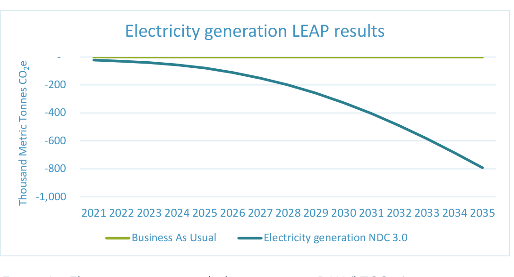

June 2025
As Minister responsible for Sustainable Development, Climate Change, and Solid Waste Management, I am honoured to present Belize’s Third Nationally Determined Contribution (NDC 3.0) under the Paris Agreement.
This document marks a pivotal step in our nation’s ongoing journey to confront the existential threat of climate change, while advancing our vision for a resilient, inclusive, and sustainable Belize.
Belize, as a Small Island Developing State, stands at the frontline of climate vulnerability. Our communities, ecosystems, and economy are increasingly exposed to the impacts of rising sea levels, intensifying storms, shifting rainfall patterns, and biodiversity loss. Despite contributing minimally to global greenhouse gas emissions, we bear a disproportionate share of climate risks. Yet, we remain steadfast in our commitment to global climate action and to leading by example among similarly vulnerable nations.
The NDC 3.0 builds on our previous commitments, reflecting enhanced ambition, updated data, and the lessons learned through inclusive, transparent, and participatory processes. It sets forth strengthened mitigation and adaptation targets for 2030 and introduces new targets for 2035, aligning our medium-term actions with Belize’s Long-Term Low-Emissions Development Strategy (LT-LEDS) and our goal of achieving net-zero emissions by 2050.
Our NDC 3.0 outlines concrete, sector-specific actions to reduce cumulative greenhouse gas emissions while increasing carbon sequestration potential and strengthening adaptive capacities across energy, waste, agriculture, forestry, and land use. We are committed to scaling up renewable energy, promoting electric mobility, advancing climate-smart agriculture, enhancing waste management, and safeguarding our rich biodiversity and coastal resources. These efforts are underpinned by a strong focus on gender equality, social inclusion, and the empowerment of vulnerable groups.
This NDC is the result of broad-based consultations, engaging stakeholders from government, civil society, the private sector, indigenous communities, and youth. Our approach ensures that climate action is not only ambitious but also equitable, inclusive, and responsive to the needs and aspirations of all Belizeans.
We recognize that realizing the targets set out in this NDC will require significant financial, technical, and human resources. While we have taken important steps with our own resources and through the support of partners, much of our ambition remains conditional upon access to international climate finance, technology transfer, and capacity building. We therefore call on the global community to match our ambition with the solidarity and support that is urgently needed.
As we move forward, the Government of Belize reaffirms its unwavering commitment to the Paris Agreement, the Sustainable Development Goals, and to safeguarding the future of our people and natural heritage. We invite all Belizeans, partners, and friends of Belize to join us in this collective endeavour to build a climate-resilient, low-carbon, and prosperous future for generations to come.
Hon. Orlando Habet Minister of Sustainable Development, Climate Change, and Solid Waste Management Government of Belize Acknowledgments Contribution (NDC 3.0) was prepared under the guidance of the National Climate Change Office (NCCO), within the Ministry of Sustainable Development, Climate Change, and Solid Waste Management and in collaboration with ministerial sectoral level experts and heads of department prior approval from Cabinet for final endorsement.
The support for the development of Belize’s NDC 3.0 was made possible through the NDC-TEC project, aimed at supporting the Implementation of NDCs in the Caribbean – transforming the transport and energy sectors towards a low-carbon and climate-resilient future, and the AMBITION project, aimed at accelerating climate action by supporting countries in developing their NDCs for 2035 with evidence-based targets and ambitions consistent with the Paris Agreement 1.5°C pathway. Both projects are funded by the German Government’s International Climate Initiative (IKI) and coordinated by Deutsche Gesellschaft für Internationale Zusammenarbeit (GIZ)
GmbH. These projects are supporting CARICOM Member States in enhancing the ambition of their NDCs, with NDC TEC focusing only on electricity and transport, while AMBITION on other relevant mitigation and adaptation sectors.
The Government of Belize acknowledges its key technical partner, Climate Analytics, for their support in the review and completion of its NDC 3.0. The support from the NDC Partnership, through its network of members, technical assistance, and the embedded facilitator within the NCCO, are also acknowledged, working alongside the Chief Climate Change Officer and team, and the broad group of stakeholders – both public and private - who actively participated in the consultations.
PREPARED UNDER THE GUIDANCE OF:
National Climate Change Office, Ministry of Sustainable Development, Climate Change, and Solid Waste Management, Belize SUGGESTED CITATION:
Government of Belize. (2025). Belize’s Third Nationally Determined Contribution. Ministry of Sustainable Development, Climate Change, and Solid Waste Management PHOTO CREDITS:
Multiple authors - Acknowledged under each photo.
AUTHORS AND CONTRIBUTORS (ALPHABETICAL ORDER):
AUTHORS:
Mr. Sisir Bhandari, Climate Analytics – Co-Author Costing and Financial Gap Analysis Dr. Robert Brecha, Climate Analytics – Co-Author LEAP Modelling and Analysis Ms. Mavis Durowaa Mainu, Climate Analytics –Co-Autor Gender Equality, Disability and Social Inclusion Mr. Rodrigo Narvaez Rojas, Climate Analytics – Leading Author Ms. Arunima Sircar, Climate Analytics – Co-Author Adaptation Mr. Diego Torralva Becerra, Climate Analytics – Leading Author COLLABORATORS:
Ms. Nazima Abidova, Climate Analytics – Reviewer Mr. Paolo Cozzi, Climate Analytics – Reviewer Dr. Jan Sindt, Climate Analytics - Reviewer Mrs. Edalmi Pinelo, Chief Climate Change Officer, National Climate Change Office, Ministry of Sustainable Development, Climate Change and Solid Waste Management – Coordinator, reviewer and collaborator Ms. Ide Sosa, Project Manager/NDC 3.0 Coordinator, National Climate Change Office, Ministry of Sustainable Development, Climate Change and Solid Waste Management – Coordinator, reviewer and collaborator Ms. Ashanti Mckoy, NDC Facilitator and Implementation Coordinator, NDC Partnership – Reviewer and collaborator Executive Summary Belize remains dedicated to increasing its greenhouse gas (GHG) emission reduction targets while strengthening adaptive capacities and addressing vulnerabilities across key sectors. Building upon its updated Nationally Determined Contribution (NDC) in 2021 and developed through an inclusive process involving multiple of stakeholders, policymakers, and experts. This NDC 3.0 is more ambitious in terms of the quantified avoided emission targets within the Energy, Waste, and Agriculture, Forestry, and Other Land Use (AFOLU) sectors. Overall, the NDC 3.0 aims to avoid cumulative GHG emissions of 6,234 kTonCO₂e by 2035 when compared against a business-as-usual (BAU) scenario, an increase from the 5,647 kTonCO₂e of cumulative avoided emissions targeted by 2030 in the previous NDC[1].
Belize remains dedicated to increasing its greenhouse gas (GHG) emission reduction targets while strengthening adaptive capacities and addressing vulnerabilities across key sectors. Building upon its updated Nationally Determined Contribution (NDC) in 2021 and developed through an inclusive process involving multiple stakeholders, policymakers, and experts, this NDC 3.0 is more ambitious in terms of the quantified avoided emission targets within the Energy, Waste, and Agriculture, Forestry, and Other Land Use (AFOLU) sectors. Overall, the NDC 3.0 aims to avoid cumulative GHG emissions of 6,234 kTonCO₂e by 2035 when compared against a business-as-usual (BAU) scenario, an increase from the 5,647 kTonCO₂e of cumulative avoided emissions targeted by 2030 in the previous NDC.[1]
Within the Energy sector, which covers electricity and transport, the combined cumulative emission avoidance target for the NDC 3.0 is set at 453 and 1,103 kTCO₂e by compared to 2020 BAU levels. For this, Belize plans to install 100 MW of utility-scale solar power and 20 MW of onshore wind power by 2035, supported by increasing the adoption target of electric vehicles to 10% and 25% in private and public transport, respectively. In the Waste sector, cumulative emission avoidance amounting to 8.5 kTCO₂e * 21 kTCO₂e by 2030 and 2035 respectively, while the AFOLU sector is expected to increase its cumulative carbon sequestration potential from 2,555 kTCO₂e in 2030 to 5,110 kTCO₂e in 2035 from 2020 BAU levels. These targets are conditional upon access to sufficient financial, technical and human capacity support. Upon securing the necessary climate finance, Belize intends to advance, among other interventions, its climate-smart agriculture and sustainable land management.
Preliminary estimates suggest total capital expenditure of about 1.55 billion USD over the coming decade, which are divided into an estimated Waste sectors, 412 million USD for the AFOLU sector, and 534 million USD for other adaptation efforts.
Belize remains committed to achieving net-zero emissions by 2050, where it has laid out a Long-Term Low-Emissions Development but still being compared for reference purposes Strategy (LT-LEDS). By bridging short-term goals and long-term ambitions, NDC 3.0 positions Belize to enhance cross-sectoral coordination and maintain momentum toward its 2050 net-zero objective.
As a Small Island Developing State (SIDS), Belize faces deep vulnerabilities to slow-onset and extreme weather events, including sea level rise, coastal erosion, biodiversity loss, and increased frequency of floods and hurricanes.
These challenges threaten Belize’s national resources, natural ecosystems, and the settlements and livelihoods of all Belizeans, with the need for ambitious and integrated climate action.
The NDC 3.0 builds on Belize’s updated NDC submitted in 2021, with enhanced and new commitments supported by more recent data and following an inclusive development process. It reflects the synergies between national climate ambitions and existing frameworks, such as the Growth and Sustainable Development Strategy (GSDS) (GOB, 2016a), the updated National Climate Change Policy, Strategy and Master Plan (NCCPSAP) (GOB, 2021a), and Horizon 2030 (GOB, 2011). These strategies provide a comprehensive blueprint for sustainable development, integrating climate resilience into economic and social planning.
The NDC 3.0 updates Belize’s previous climate commitments with enhanced targets for 2030 and an expansion of the climate ambition with new targets for 2035. The NDC 3.0 is aligned with the Belize Long-Term Low-Emissions Development Strategy (LT-LEDS), which has already been adopted, and sets out pathways for achieving net-zero emissions around 2050, while fostering economic growth and resilience. The NDC 3.0 serves as an essential medium-term bridge, ensuring that immediate actions align with Belize’s long-term vision. This approach harmonises efforts to reduce greenhouse gas emissions, build adaptive capacity, and address vulnerabilities across sectors such as energy including transport, forestry, agriculture, and waste.
Recognizing the importance of synergising climate action with national priorities, the NDC 3.0 aligns its targets with Belize’s economic development goals, emphasizing sustainable energy, nature-based solutions, and climate-smart technologies. These actions not only support the implementation of the Paris Agreement but also contribute to the achievement of Belize’s Sustainable Development Goals (SDGs).
The NDC 3.0 development process was rooted in inclusivity and transparency, engaging stakeholders from diverse backgrounds, including indigenous communities, vulnerable populations, and sectoral leads. By adopting a gender-sensitive and community-driven approach, Belize ensures that its climate strategies promote equity, inclusiveness, and sustainable outcomes.
Belize’s NDC 3.0 underscores the nation’s ambition to lead by example among SIDS, showcasing how innovative approaches, coupled with international support for financing, capacity building, and technology transfer, can drive transformative change. As a complement to the LT-LEDS and national policies, the NDC 3.0 sets Belize on a clear trajectory toward a sustainable and resilient future, demonstrating its unwavering commitment to global climate action.
Belize, a Small Island Developing State (SIDS) located in Central America, is bordered to the north by Mexico, to the west and south by Guatemala, and to the east by the Caribbean Sea. Covering an area of roughly 22,966 square kilometres, the country exhibits a diverse landscape ranging from low-lying coastal plains and expansive mangrove swamps to the mountainous terrain of the Maya Mountains. In addition to its mainland, Belize encompasses over 1,060 cayes, which alongside its extensive coastline of approximately 386 kilometres, contribute to its rich marine biodiversity and provide a foundation for the nation’s fisheries and tourism sectors.
Belize’s tropical climate is influenced by its geographic location on the Caribbean coast. Experiencing two different seasons: rainy from June to November and dry from December to May. Given the mountainous range, there are significant climate variations with on average higher rainfall in the southern areas when compared with the northern ones. Given its geographical location, Belize is highly vulnerable to the adverse impacts of climate change.
With a population of approximately 441, 387 (as of March 29, 2025), Belize exhibits a diverse demographic composition comprising multiple ethnic groups and cultures. Approximately 15.8% of the population identify as Maya, 50% as Mestizo, 6.1% as Garifuna, and around 4.6% as Creole, among other communities that include Mennonites, East Indians, and Chinese (SIB, 2022).
Despite its relatively small size and population, the country boasts a rich cultural heritage and diversity of ecosystems, including the world’s second-largest barrier reef, tropical rainforests, wetlands and extensive coastal mangroves and mountainous regions. Belize is divided into six districts: Corozal, Orange Walk, Belize, Cayo, Stann Creek and Toledo.
Economically, Belize is classified as an upper middle-income country (WB, 2023).
with a service-oriented economy that accounts for approximately 70% of its output, largely driven by tourism, financial services, and trade (IMF, 2024). The nation has experienced moderate GDP growth in recent years, although challenges such as a high debt-to-GDP ratio and the economic disruptions caused by the COVID-19 pandemic have underscored its vulnerability. A significant portion of the population lives in poverty—estimates from 2024 indicate that about 22% of Belizeans were living under multidimensional poverty (SIB, 2024). These economic challenges are compounded by the country’s limited domestic capacity to generate public revenue, with a debt-to-GDP ratio of over 60%, and the heavy reliance on imported goods and services (IMF, 2025).
Despite its limited contribution to global greenhouse gas (GHG) emissions, Belize remains committed to global climate action. The country has a long-standing history of environmental stewardship and international cooperation, underscored by its ratification of the Paris Agreement in 2016 and active participation in the High Ambition Coalition. These commitments reflect Belize’s dedication to transitioning toward a low-carbon, climate-resilient future while addressing pressing socio-economic vulnerabilities.
There are significant threats in terms of climate change and its impacts in Belize, such as rising temperatures, changing rainfall patterns, sea level rise and increased frequency and severity of extreme weather events, threatening Belize’s environment, economy, and population. The country is among the most vulnerable globally to natural disasters and climate-related shocks, incurring annual losses equivalent to 4% of GDP due to weather-related events (GOB, 2015b).
Precipitation patterns are expected to shift, with a decrease in mean annual rainfall across much of the country, although rainfall may increase in certain localised areas, particularly near the southern mountainous regions. This reduction in rainfall will increase the risk of prolonged droughts, especially in northern and central regions, while the frequency of torrential rain during the wet season is expected to rise, leading to more frequent flooding events (GOB, 2024a).
Currently, the projected sea level rise by the end of the century is expected to be up to 103.9 cm. This rise poses significant risks to coastal communities, critical infrastructure, and ecosystems, especially mangroves and coral reefs, which serve as natural barriers against storm surges. Erosion and saltwater intrusion into freshwater supplies will become more prominent as sea levels rise, threatening both agricultural productivity and human settlements (GOB, 2024a).
In addition, increasing levels of carbon dioxide in the atmosphere will drive ocean acidification, affecting Belize's coral reefs and marine biodiversity, with further impacts on the Belizean population, whose livelihoods depend on the tourism, fisheries or aquaculture sectors (GOB, 2024a).
The impacts of climate change disproportionately affect Belize's most vulnerable populations, including indigenous communities, low-income households, and women. Addressing these challenges requires urgent and coordinated action across all sectors, accompanied by significant amounts of climate finance needed.
Belize net carbon emissions act as a net carbon sink, given the contributions from the Agriculture, Forestry and Other Land-Use sector. However, the energy-sector GHG emissions climbed from 538 in 2012 to 850 kTonCO₂e in 2019 and have remained somewhat stable at similar levels since then. The Industrial Processes and Product Use (IPPU) sectoral emissions have also been steadily increasing from 31 to around 200 kTonCO₂e, reflecting expanding industrial activity. The Waste sector exhibits a smaller but notable rise, going from 23 in 2012 to 56 in 2022. AFOLU exhibits net GHG removals across the observed interval, however, the carbon sink has been decreasing over time from -7,771 in 2012 to -4,687 in 2022, suggesting that there are increasing pressures on land and forest resources nationally, but with still many opportunities for the AFOLU sector to maintain and enhance its carbon sequestration potential, which could potentially be achieved through improved forest management and stewardship.
| Table 1 – Belize Greenhouse gas inventory data[2] (in kTCO₂e) | |||||
|---|---|---|---|---|---|
| Sector | 2012 | 2015 | 2017 | 2019 | 2022 |
| Energy | 538.1 | 781.8 | 786.4 | 850.0 | 722.8 |
| Industrial Processes and Product Use (IPPU) | 31.4 | 42.5 | 43.7 | 164.3 | 199.1 |
| Agriculture, Forestry and Other Land-Use (AFOLU) | -7,771.4 | -6,104.3 | -6,683.7 | -8,512.2 | -4,687.5 |
| Waste | 22.7 | 19.9 | 26.8 | 27.8 | 56.22[3] |
| International Bunkers | 40.4 | 40.2 | 71.9 | 54.4 | 73.3 |
| Total without FOLU | 832.2 | 1,107.5 | 1,194.7 | 1,092.3 | 995.1 |
| Total with FOLU | -7,179.1 | -5,260.1 | -5,286.9 | -7,419.9 | -3,692.4 |
Source: (GOB, 2020a, 2022a, 2024b)
Belize’s climate response is deeply integrated into its broader development and national growth strategies and policies, reflecting synergies between environmental sustainability and socio-economic progress. Key policy and strategy frameworks include:
Belize’s NDC 3.0 reflects the country’s alignment with its climate commitments through these strategic frameworks, to start paving the way towards a net-zero pathway, by also aiming to align short- and medium-term actions that contribute to the country’s long-term vision, by leveraging synergies with the national policy framework that could enhance socio-economic and environmental benefits wherever possible. The country’s approach aims also to begin to pay more focus on Gender Equality, Disability and Social Inclusion (GEDSI) implications, the very close interlinkage with sustainability planning and implementation, and by emphasising the urgent need for increased international support to achieve its ambitious climate goals, given the vulnerable position under which Belize is currently facing the effects of climate change.
The development of Belize’s NDC 3.0 reflects a comprehensive, structured, inclusive, and engaging approach aimed at enhancing ambition, transparency, and ownership. Supported by key initiatives such as the NDC-TEC and AMBITION projects, the process emphasised robust stakeholder engagement, Gender Equality, Disability and Social Inclusion (GEDSI), ensuring that the updated NDC aligns with national priorities and global climate ambition.
The stakeholder engagement process for Belize’s NDC 3.0 was both comprehensive and inclusive, encompassing four in-country missions, virtual stakeholder consultations, and a national NDC launch event and validation sessions. This approach aimed to ensure that the voices of diverse stakeholders were heard and that the resulting NDC reflects the collective vision of Belize’s government, civil society, private sector, and vulnerable communities. A more detailed description of the process and the stakeholders that participated can be found in Appendix B – Stakeholder Consultation Process.
Belize’s NDC 3.0 electricity and transport mitigation targets and corresponding avoided emissions were modelled using the Low-Emission Analysis Platform (LEAP), a software tool widely used for energy policy and climate change mitigation analysis. The main premise behind LEAP is that energy demands, as supplied to the tool by the modeler based on historical data and future projections, are then satisfied based on input energy supplies. The software is able to model a variety of scenarios with the aim of comparing potential sets of mitigation interventions. LEAP is a flexible and convenient means of recording and organizing input data and output results, but it depends strongly on the availability of data and (local, stakeholder) expert input to develop the relevant scenarios (SEI, 2024).
The LEAP modelling for Belize includes a Business-As-Usual (BAU) scenario to set the baseline against which the NDC 3.0 interventions will be compared. The NDC 3.0 scenario includes interventions related to both the electricity, transport and land-use NDC related targets and actions. Additional scenarios were examined that include interventions related to Belize’s LT-LEDS, to understand whether the NDC targets align with the ambition pledged in the LT-LEDS; however, here only the BAU and the NDC 3.0 scenario are shown for electricity, transport and AFOLU.
While the LEAP analysis captures core mitigation interventions in the energy and transport sectors, Belize’s NDC 3.0 includes a broader set of mitigation measures that were not modelled due to a lack of sufficient data, quantified indicators, or clear baselines. These include actions in the waste and AFOLU sectors, such as solid waste diversion, composting and bio-digestion, sustainable crop and livestock management practices, and blue carbon conservation. Although these measures were excluded from the LEAP model, they are expected to contribute significantly to Belize’s overall mitigation ambition, mainly through emissions reductions and removals not yet fully quantified.
Furthermore, the NDC 3.0 incorporates a wide range of adaptation measures across sectors, such as sustainable land and water management, climate-resilient agriculture, coastal ecosystem restoration, and infrastructure resilience, that, while primarily designed to reduce vulnerability and build resilience, may also yield co-benefits for mitigation. Additionally, several cross-cutting actions, including capacity building, gender-responsive planning, MRV system enhancement, and climate governance reforms, are not modelled in LEAP but are critical for enabling and sustaining both mitigation and adaptation outcomes over the long term.
Belize is committed to supporting the Paris Agreement’s primary goal of restricting global warming to 1.5° Celsius above pre-industrial levels. This dedication was demonstrated when Belize submitted its initial Nationally Determined Contribution (NDC) in April 2016, followed by its updated NDC in 2021, and now the NDC 3.0 in 2025.
This NDC 3.0 further strengthens Belize's 2030 targets and sets new targets for 3.0 brings the country closer to a pathway that follows the trajectory outlined in the country’s Long-Term Low Emission Development Strategy (LT-LEDS).
Belize’s LT-LEDS represents the extended vision through 2050 for achieving a low-carbon and sustainable development pathway.
Belize’s NDC 3.0 encompasses a diversity of sectoral targets and actions, which are separated into mitigation, adaptation and cross-cutting sectors.
In total, the amount of committed avoided emissions and enhancement of carbon sinks adds up to 6.2 MTon CO2e as seen in Table 2 below. The individual contributions include the avoided emissions under energy (for both electricity and transport sub-sectors), waste, and the enhancement of the carbon sequestration potential of the Agriculture, Forestry and Other-Land Use sector.
| Table 2 – Summary of quantified mitigation targets Belize’s NDC 3.0 (in cumulative kTonCO₂e) | |||
|---|---|---|---|
| Sector | Sub-sector | 2030 | 2035 |
| Energy | Electricity | 326 | 791 |
| Transport | 127 | 312 | |
| Waste | Waste | 8.5 | 21 |
| AFOLU | Agriculture, Forestry and Other Land-Use | 2,555 | 5,110 |
| Total | 3,017 | 6,234 | |
Belize’s mitigation targets aim to reduce nationwide emissions through a specific amount of cumulative avoided emissions for the IPCC energy sector including both electricity and transport, and the IPCC waste sector. This is noting that there is an additional mitigation contribution from the IPCC Agriculture Forestry and Other Land-Use (AFOLU) sector, which can be found under the cross-cutting targets and actions in chapter 6 below.
Additionally, the accompanying actions and targets for the mitigation sectors aim to enhance the country’s energy security and efficiency, improve the mobility options and reduce waste pollution-related emissions.
The energy sector in Belize comprises both electricity generation and transport, as well as energy end-use in homes, commercial applications and industry, and remains one of the largest contributors to Belize's national greenhouse gas (GHG) emissions. Belize is committed to reducing its GHG emissions in the energy sector, putting more emphasis on quantified mitigation targets for its NDC 3.0. Its objective is to transition to a low-carbon energy system while building resilience and energy security.
As shown in Table 3 below, the mitigation targets for electricity generation include scaling up the share of renewable energy (RE) production in the nation's electricity generation mix to 75% and 80% from domestic sources by 2030 and 2035, respectively, with a focus on solar and wind installations. Belize aims to drastically expand its utility-scale solar PV capacity, while promoting and incentivising decentralised rooftop solar PV systems, mainly focusing on commercial buildings. There are also plans and a target related to reducing transmission and distribution losses to no more than 10% by 2030 and a target to reduce the overall energy intensity of the sector through energy efficiency improvements. The column named “Cond.” shows what targets or actions are conditional (“C”) or unconditional (“U”) to international support, while the SDG column shows the related Sustainable Development Goals applicable to each target or action.
To achieve these ambitious targets, Belize's NDC 3.0 sets a combination of soft (regulatory and policy) and hard (technology installation) measures. In the case of electricity generation, technology-specific capacity targets for solar and wind technologies are defined, reaching 45 MW and 100 MW for solar in 2030 and storage capacity to lower some of the issues related to the intermittency of RE resources. There are also activities aimed at increasing the adoption of rooftop solar PV and solar water heating systems in commercial and residential buildings.
In terms of the supporting soft measures, policy development, regulatory enhancement, technical assistance, and capacity-building interventions are prioritised to create an enabling environment for such ambitious targets, while ensuring institutional readiness to support the low-carbon transition. Some examples of soft measures include examining incentive mechanisms for a rapid adoption of rooftop solar PV and water heating systems, or enhancing the Monitoring, Reporting and Verification (MRV) systems to have a better sense of baseline data and to continuously track progress on the NDC key performance indicators. Together, these measures form the basis of Belize's strategy for a cleaner, more efficient, and resilient electricity sector, helping the country slowly but safely get in the way of net-zero emissions, following its long-term climate commitments, such as the LT-LEDS, which has already been adopted.
| Table 3 – Electricity mitigation targets and actions | |||||
|---|---|---|---|---|---|
| NDC 3.0 Mitigation Targets and Actions – Electricity | |||||
| Description | 2030 | 2035 | Cond.[4] | SDG | |
| Targets | 1. Avoid emissions from the electricity sector (cumulative avoided emissions from 2020 levels) | 326 ktCO₂e | 791 ktCO₂e | C | 7, 13 |
| 2. Increase renewable energy generation in the electricity mix[5] | 75% | 80% | C | 7, 13 | |
| 3. Reduce transmission & distribution losses (% total system losses) | 10% | 10% | C | 7 | |
| 4. Reduce energy intensity through energy efficiency measures in public and private buildings and for appliances from 2020 levels | 10% | 15% | C | 7, 13 | |
| Description (Actions) | 2030 | 2035 | Cond. | SDG | |
| Actions | Install utility-scale solar power (total installed capacity) | 45 MW | 100 MW | U | 7 |
| Install onshore wind power capacity (total installed capacity) | 0 MW | 20 MW | C | 7 | |
| Install battery storage capacity (total installed capacity) | 40 MW | 80 MW | U/C | 7 | |
| Adoption of rooftop solar PV systems in urban public, commercial and residential buildings (total installed capacity) | 10 MW | 20 MW | C | 7 | |
| Solar water heating penetration within the commercial and residential sectors (cumulative percentage share) | 10% | 20% | C | 7 | |
| Enforce energy efficiency standards and labelling schemes in all the national territory by 2026 | C | 7 | |||
| Adopt interconnection policy framework for integration of distributed RE by 2026 and implement it by 2028 | C | 7 | |||
| Perform energy audits in all public buildings by 2028 | C | 7 | |||
| Examine opportunities for a centralised MRV system which can help determine a baseline for energy intensity by 2028 | C | 13 | |||
| Develop financial schemes and support for the installation of rooftop solar PV systems and EE interventions in commercial and residential buildings by 2028 | C | 7 | |||
| Capacity building for enterprises and small businesses dealing with RE and EE with 2 campaigns by 2030 and 4 by 2035 (cumulative total no. of campaigns) | C | 7 | |||
| Explore the feasibility for additional RE capacity from wind, hydro and biomass by 2030 | C | 7 | |||
The relative reductions in emissions for the electricity sub-sector modelled with LEAP are shown in Figure 1. The scenario with proposed NDC targets results in significant reductions in emissions with respect to the BAU scenario (starting from a base year of 2020). The cumulative quantitative avoided emissions are estimated at 326 and 791 kTonneCO₂e by 2030 and 2035 respectively.

The transport sub-sector is the largest contributor to GHG emissions in Belize.
The NDC 3.0 specifies targets to improve energy efficiency and increase uptake of low-carbon technologies. Compared to the previous NDC, NDC 3.0 enhances electric vehicle (EV) penetration in both public and private fleets while aiming to increase energy efficiency in the transport sub-sector overall. The targets include a cumulative reduction of 127 ktCO2eq by 2030 and 312 by 2035, with respect to the BAU emissions from 2020 levels. The emissions avoidance will be achieved by increasing electric vehicle penetration to 10% and 25% in the public vehicle fleet, scaling up the new EVs sold to 5% and 10% of the private vehicle fleet, and an increasing energy efficiency by 15% and 20% by 2030 and 2035 respectively. The efficiency targets imply that vehicle fleet fuel consumption efficiency improves at about 3% per year until 2030 and a further 1% per year until 2035, by importing more efficient vehicles and more hybrid electric vehicles and by slowly integrating low-carbon blended fuels. The greatest efficiency improvements and emissions reductions arise from the switch over time to electric vehicles.
The supporting activities for the transport sector targets include adapting the policy framework by including considerations for energy policies and strategies to accommodate the increased adoption and demand exerted by EVs to the national electricity grid for readiness planning and energy efficiency improvements, by revising and implementing an updated National Transport Masterplan to incentivise and accelerate the adoption of electric transportation modes and also improving the supporting charging and road infrastructure.
Other actions include a more thorough analysis to identify energy intensity reduction opportunities in the transport sector for increased adoption of EVs or standardisation of low-carbon blends for internal combustion engine (ICE)
vehicles, along with the possibility of implementing restrictions on the import of older, less efficient vehicles. Additionally, setting up a comprehensive MRV system where data is collected and analysed to better determine baseline conditions and develop improved predictions for future sectoral scenarios.
Finally, Belize is placing special emphasis on exploring strategies to mitigate emissions from the maritime transport sector, which is vital for the country’s overall trade, tourism and other economic activities and development. A Maritime Sector Baseline Assessment Report was developed, which recommends examining potential interventions that would improve fuel efficiency of maritime vessels, reduce emissions from port infrastructure, and foster the incursion of cleaner technologies such as electrifying some of the port operations (IMO-Norway, 2024). The NDC includes one action related to maritime transportation with the expectation that a pilot project will be implemented towards the end of the NDC 3.0 implementation phase.
| Table 4 – Transport mitigation targets and actions | |||||
|---|---|---|---|---|---|
| NDC 3.0 Mitigation Targets and Actions – Transport | |||||
| Description | 2030 | 2035 | Cond. | SDG | |
| Targets | 1. Avoid emissions from the transport sector (cumulative avoided emissions from 2020 levels) | 127 ktCO₂e | 312 ktCO₂e | C | 13 |
| 2. Electric vehicle penetration in the public vehicle fleet (percentage from total) | 10% | 25% | C | 7 | |
| 3. Electric vehicle sales in the private vehicle fleet (percentage from total) | 5% | 10% | C | 7 | |
| 4. Increase energy use efficiency in the transport sector per passenger-km and tonne-km (cumulative percentage from total fleet energy use) | 15% | 20% | C | 7 | |
| Description (Actions) | Cond. | SDG | |||
| Actions | Operationalise electric buses in the public transport system (no. of bus units) | U/C | 11 | ||
| Explore opportunities for increasing energy efficiency of the transport fleet through emissions testing and emissions-based incentives and low-carbon blends by 2028 | C | 7, 13 | |||
| Revise the National Transport Master Plan to include considerations for E-mobility, modal shifts, formalise incentive schemes, and upgrade key infrastructure in urban and rural areas by 2028 | C | 11 | |||
| Examine opportunities to expand electric vehicle charging infrastructure, in particular for 2-wheelers, by 2028 | C | 7, 11 | |||
| Develop and implement a pilot project for an enhanced public transportation system in Belize City by 2030 | C | 11 | |||
| Examine opportunities to reduce emissions from maritime transportation with a feasibility analysis by 2030 and the implementation of a pilot project by 2035 | C | 9, 13 | |||
| Examine opportunities for expanding public transportation options in tourism areas to reduce fuel consumption by 2028 | C | 11, 12, 13 | |||
In Figure 2 the results of the LEAP modelling for the transport sub-sector are shown for overall emissions from the transport sector. A comparison is made of cumulative avoided emissions with respect to the BAU scenario. Quantitatively, the cumulative differences are -127 ktCO₂ in 2030 and -312 ktCO₂ in 2035.
The waste sector poses a significant challenge and has many opportunities for the overall quantified avoided emission contribution of Belize. Many of the interventions here presented require very specific technical support given the limitations Belize currently faces, which is why all activities are conditional on international support. Under the NDC 3.0, Belize has focused on improving waste management coverage for urban and rural areas and increasing recycling share at source. The foundations of the waste sector interventions will be set by developing a comprehensive Waste Management Masterplan by 2032 with detailed guidance on specific measures and an implementation plan by 2040 to improve both solid and water waste management in Belize, with improved MRV systems, enhanced recycling initiatives and supporting soft measures.
One of the main challenges in the waste sector in Belize is the lack of a consolidated data management system, which would ease the process of establishing a sectoral baseline and subsequently track progress on the climate commitments and project contributions undertaken in the sector. Given these limitations, much of the efforts will first aim to establish the required framework and human capacity to better manage the data collection and analysis, and to track progress on key sectoral performance indicators. The setting up of such a system will be detailed in a sectoral masterplan.
Belize is committed to the development and adoption of a legal and policy framework on a circular economy, waste reduction, and enhancement of reuse and recycling in all sectors, by 2030. Other commitments include improved enforcement for ending open waste burning, one of the main contributors to the sectoral emissions. Capacity building is also part of these objectives, and there are plans to conduct national campaigns on recycling and waste management between 2025 and 2030 to increase public engagement and awareness and enhance institutional readiness.
Additionally, potential options will be mapped by 2028, with the aim of limiting emissions from solid waste in key sectors such as health, tourism, industrial, and agricultural activities while also keeping in mind wastewater improvement opportunities.
Belize is committed to creating a more sustainable waste sector overall. The progress made given the international support provided to date has been acknowledged, but additional support will be required to close a financing gap of around USD 53 million in the sector.
| Table 5 – Waste mitigation targets and actions | |||||
|---|---|---|---|---|---|
| NDC 3.0 Mitigation Targets and Actions – Waste | |||||
| Description | 2030 | 2035 | Cond. | SDG | |
| Target | 1. Avoid emissions from the waste sector (cumulative avoided emissions from 2020 levels) | 8.5 kTonCO₂e | 21 kTonCO₂e | C | 11, 12, 13 |
| Description (Actions) | 2030 | 2035 | Cond.[6] | SDG | |
| Actions | Increase share of recycling by separation at source (% from total recyclable waste) | 5% | 10% | C | 11, 12 |
| Increase share of flared methane emissions at the national sanitary landfill (% from total methane emissions) | 10% | 15% | C | 11, 12 | |
| Increase waste management coverage in both urban and rural areas for efficient waste management and to seek to reduce the amount of open waste burning, establish a baseline and target coverage for 2035 by 2030 | C | 11, 12 | |||
| Develop a waste management masterplan targeting improved efficiency, recycling and data collection by 2032 and implement it by 2035 | C | 11, 12 | |||
| Develop and adopt a legal and policy circular economy framework by 2030 | C | 12 | |||
| Develop and enforce a legislation for ending open burning waste by 2030 | C | 11, 12 | |||
| Conduct 3 capacity building campaigns for recycling and waste management by 2030 and 6 by 2035 | C | 11, 12 | |||
| Examine opportunities for reducing emissions from solid waste from other sectors including health, tourism, industrial and agricultural residues by 2028 | C | 12, 13 | |||
| Examine opportunities for reducing emissions from wastewater by 2030 | C | 6, 12 | |||
Belize’s mitigation costs were estimated for the period 2021-2035 by using different assumptions depending on the sectoral estimates. The costs presented here are just preliminary and might in some cases be underestimated, contingent upon further research and a proper financial needs examination. As seen below in Table 6, the estimated preliminary mitigation total costs amount to around terms of how much has been procured versus how much is still missing is around 75% from the total costs by 2035. For further information on the assumptions used in the costing, please refer to Appendix A - Costing assumptions and sources.
| Table 6 – Mitigation sector costs and financing gap (in million USD) | ||||
|---|---|---|---|---|
| Mitigation Sector | Total costs by 2035 (MUSD) | Funding procured (MUSD) | Funding gap (MUSD) | Funding gap (% of total) |
| Electricity | 411 | 136 | 275 | 67% |
| Transport | 134 | 7 | 127 | 95% |
| Waste | 64 | 11 | 53 | 83% |
| Total | 609 | 154 | 455 | 75% |
Within Belize’s NDC 3.0, the Agriculture, Forestry and Other Land Use (AFOLU) sectors are considered crosscutting in nature, given their contribution by acting as net carbon sink while providing far-reaching benefits. Those sectors interact with other socioeconomic and natural areas, such as energy use, biodiversity, food security, and rural livelihoods. Their sustainable management is paramount to providing holistic climate resilience and adaptation. In summary, the sector contributes in one way or another to mitigate and adapt to climate change and its effects.
The agriculture sub-sector includes both targets and interventions regarding better management of agricultural land for crops, promotion of agrosilvopastoral and rotational grazing (Voisin) systems, but also considerations for improving livestock management and the promotion and adoption of Climate-Smart Agricultural solutions with capacity building and appropriate incentive mechanisms to support farmers.
The Forestry and Other Land-Use (FOLU) sub-sector represents a considerable carbon sink in the country, contributing to carbon sequestration and many adaptation co-benefits from maintaining stable environmental conditions for biodiversity to thrive. Given this remarkable importance, the FOLU sector includes targets and actions that align with Belize’s REDD+ Strategy, aiming to reduce deforestation and forest degradation through sustainable management practices and programmes while supporting the communities and groups whose livelihoods depend on forestry activities.
6.1 AFOLU in the NDC Table 7 shows the targets and actions for the AFOLU sector, which include cumulatively increasing the GHG removals or carbon sink potential from the whole AFOLU sector to 2,555 Gg CO2eq by 2030 and 5,110 Gg CO2eq by 2035 from a baseline level of 2020.
The relative reductions in emissions for the electricity sub-sector modelled with LEAP are shown in Figure 3. The scenario with proposed NDC targets results in significant reductions in emissions with respect to the BAU scenario (starting from a base year of 2020) The cumulative quantitative avoided emissions are estimated at 2,555 and 3,110 kTonCO2e by 2030 and 2035 respectively.
Figure 3 shows the AFOLU LEAP carbon sink potential results. The cumulative quantitative avoided emissions (additional carbon sequestration) are estimated at 2,555 and 3,110 kTonCO₂e by 2030 and 2035 respectively.

Specific actions for the FOLU sub-sector include reducing deforestation rates in general within protected and non-protected areas. Other actions include specific activities for restoration and reforestation of publicly owned forest land areas and diverse ecosystems, including riparian forests, mangroves, and peatlands.
Belize is also committed to examining opportunities for expanding and improving existing privately owned conservation areas by engaging and creating partnerships and combining efforts with private landowners and local communities, thus helping to strengthen the protection of privately owned lands with high carbon sequestration and co-benefits potential, as for example mangroves, for which Belize has already committed to restore and conserve most of its publicly owned areas. For this, Belize will support the implementation and enforcement of the 2018 Forests Protection of Mangroves Regulations, with plans to create a dedicated Mangrove Unit within the Forest Department by adopting and implementing the Belize Mangrove Alliance Action Plan.
Given the high contribution of forest wildfires to forest degradation in Belize, the country has committed to developing and implementing a programme for Integrated Fire Management, which will be developed by 2035, aiming to mitigate wildfire risks however possible and improve forest fire management.
Additionally, Belize will keep pursuing opportunities to participate under Article Belize aims to complete and validate a National Peatland Map and implement preliminary carbon assessments by 2026. Subsequently, high-biodiversity, high-carbon peatland areas for protection will be mapped by 2028. By 2032, incentive mechanisms for the protection of these key areas will also be put in place.
By 2030, the Forest Department aims to establish a centralised monitoring and reporting system that integrates forestry, biodiversity, and agriculture, to have a single clearing house where all data from these sectors is collected and analysed, and which keeps track of progress under the NDC commitments and other international reporting requirements, be it carbon markets or similar mechanisms. This shows Belize’s commitment to maintaining healthy forest ecosystems and sustainable land use, given its critical contribution to the ecological, economic and social dimensions.
| Table 7 – Agriculture, Forestry and Other Land-Use (AFOLU) cross-cutting targets and actions | |||||
|---|---|---|---|---|---|
| NDC 3.0 Mitigation Targets and Actions – Agriculture, Forestry and Other Land-Use (AFOLU) | |||||
| Description | 2030 | 2035 | Cond. | Focus / SDG | |
| Targets | 1. Enhance the carbon sequestration potential from the AFOLU sector (cumulative from 2020) | -2,555 kTonCO₂e | -5,110 kTonCO₂e | C | AFOLU / 12, 13, 14, 15 |
| 2. Expand land area under sustainable land management (cumulative no. of hectares) | 75,000 ha | 90,000 ha | C | AFOLU / 12, 13 | |
| 3. Improve agronomic practices on arable sugar land in Northern Belize (no. of hectares) | 5,000 ha | 10,000 ha | C | Agriculture / 13, 15 | |
| 4. Increase penetration of Climate-Smart and Sustainable Agriculture solutions (CSSA) within Belizean farms (penetration %) | 15% | 25% | C | Agriculture / 2, 13 | |
| 5. Implement restoration of degraded grasslands (cumulative no. of hectares) | 5,000 ha | 6,250 ha | C | Agriculture / 2, 13, 15 | |
| 6. Promote silvopasture land-use and Voisin systems on non-degraded grasslands (cumulative no. of hectares) | 5,000 ha | 7,500 ha | C | Agriculture / 13, 15 | |
| 7. Increase agrosilvopastoral land-use systems converted from croplands (cumulative no. of hectares) | 4,500 ha | 6,500 ha | C | Agriculture | |
| 8. Reduce emissions from livestock management from 2020 levels by | 10% | 15% | C | Agriculture | |
| 9. Reduce deforestation rates in protected areas by (cumulative reduction from 2020 levels) | 0.05% | 0.6% | C | FOLU | |
| 10. Reduce deforestation rates in non-protected areas by (cumulative reduction from 2020 levels) | 0.1% | 0.2% | C | FOLU | |
| 11. Reforestation of forest land area including riparian forests (cumulative no. of hectares) | 6,000 ha | 10,000 ha | C | FOLU | |
| Targets (cont.) | 12. Restoration of degraded forest land area (cumulative no. of hectares) | 8,000 ha | 15,000 ha | C | FOLU |
| 13. Restoration of mangroves in public land (cumulative no. of hectares) | 2,000 ha | 2,500 ha | C | FOLU / 13, 14, 15 | |
| 14. Increase protected areas of mangroves (cumulative no. of hectares) | 6,000 ha | 8,000 ha | C | FOLU | |
| 15. Enhance the carbon sink potential of the AFOLU sector — see target 1 above for quantified value | See target 1 | C | AFOLU | ||
| Description (Actions) | Cond. | Focus / SDG | |||
| Actions | Examine opportunities to support and incentivise the adoption of CSSA practices and technologies by 2028 | C | Agriculture / 13, 17 | ||
| Capacity building for CSSA with 3 trainings by 2030 and 6 by 2035 (cumulative no. of trainings) | C | Agriculture / 4, 13, 17 | |||
| Establish a dedicated climate change and water management unit within the Ministry of Agriculture, Food Security, and Enterprise (MAFSE) by 2030 with human capacity of at least six (6) technical officers by 2035 | C | Agriculture / 6, 13, 15 | |||
| Capacity building for agrosilvopastoral systems integration with 3 trainings by 2030 and 6 by 2035 (cumulative no. of trainings) | C | AFOLU / 6, 13, 15 | |||
| Design agrosilvopastoral, drought-resistant, diversification, intercropping, and water harvesting programmes country-wide by 2030 and implement them by 2035 | C | AFOLU / 6, 13, 15 | |||
| Conduct vulnerability assessments to determine crops and species highly susceptible to pests and diseases incidence influenced by climate change impacts by 2030 | C | Agriculture / 3, 13, 15 | |||
| Develop a framework for climate change and sustainable water management in the agriculture sector by 2030 and enforce it by 2035 | C | Agriculture / 6, 13 | |||
| Explore opportunities for improvement of existing and establishment of new public conservation areas, partnerships with landlords of privately owned mangroves and local communities | C | FOLU / 15, 17 | |||
| Implement and enforce the 2018 Forests Regulations related to protection of mangroves and create a dedicated Mangrove Unit within the Forest Department with sufficient human and technical capacity by 2030 | U/C | FOLU / 14, 15 | |||
| Revise and adopt the Belize Mangrove Alliance Action Plan including considerations for mangrove vulnerability and sustainable development in vulnerable coastal areas and cayes by 2030 and implement it by 2040 | C | FOLU / 13, 14, 15 | |||
| Adopt and implement the Belize National Mangrove Restoration Action Plan by 2026 | C | FOLU / 13, 14, 16 | |||
| Implement a Programme for Integrated Fire Management to reduce emissions from wildfires in nationally managed forests by 2035 | C | FOLU / 13, 15 | |||
| Examine opportunities for participation under Article 6 of the Paris Agreement carbon markets by 2030 | C | FOLU / 13, 17 | |||
| Finalise a National Peatland Map and initial carbon assessment by 2026 and identify potential peatland conservation areas with a focus on biodiversity and carbon storage by 2028 | U/C | FOLU / 13, 15 | |||
| Ensure effective conservation of key peatland areas with high carbon sequestration and biodiversity potential through appropriate incentive mechanisms by 2032 | C | FOLU / 13, 15, 17 | |||
| Examine opportunities for incentivising sustainable management practices for landowners and to disincentivise illegal land clearing by 2030 | C | FOLU / 15 | |||
| Establish a centralised monitoring and reporting system integrating forestry, biodiversity and agriculture within the Forest Department by 2030 | C | FOLU / 13, 15 | |||
The cross-cutting costs for Belize’s NDC follow the same logic as with both mitigation and adaptation, considering them as just very preliminary and which need further examination and refinement before actual project implementation.
The identified total costs for the AFOLU sector is estimated at around 410 million USD by 2035, and the financing gap is estimated at 93% from the total costs, which would be the amount still remaining to procure financial resources. For a more detailed information on the assumptions used for the estimation of the costs, please refer to Appendix A – Costing assumptions and sources.
| Table 8 – AFOLU sector total costs and financing gap (in million USD) | ||||
|---|---|---|---|---|
| AFOLU Sector | Total costs by 2035 (MUSD) | Funding procured (MUSD) | Funding gap (MUSD) | Funding gap (% of total) |
| Agriculture | 81.2 | 16.9 | 64.3 | 80% |
| Forestry | 331.2 | 9.7 | 321.4 | 97% |
| Total | 412.4 | 26.7 | 385.7 | 93% |
Key priority sectors identified in the 2014 Integrated Vulnerability and Adaptation Assessment included coastal development, water, agriculture, tourism, human health, and fisheries (GOB, 2014). Belize is most vulnerable to sea level rise, changes in weather patterns resulting in the increasing frequency, intensity and duration of storms, flooding, increases in sea surface temperature, ocean acidification, coral bleaching, droughts, and wildfires. As a nation, Belize is also highly dependent on its natural resources and the services it provides. As a result, climate adaptation is an integral part of the country's climate action efforts to ensure resilience, climate-proofing and the sustainable use and management of its resources.
Belize's National Communication (2022) identifies the main barriers to climate change adaptation as being the lack of human and financial resources, lack of awareness surrounding climate change, limited collaboration amongst stakeholders, and a lack of political will to integrate climate change adaptation into planning and implementation. As a result, Belize's NDC 3.0 offers the unique opportunity to make concerted efforts to address and tackle as many of these barriers in adaptation planning and implementation to work towards increasing socioeconomic and climate resilience and ensuring sustainable management of all its resources.
The adaptation targets and actions are described in the following tables for the following sectors: coastal zone and marine environments, fisheries, aquaculture, human health, tourism, human settlements & infrastructure, water, and biodiversity. The targets and actions presented here aim to enhance the resilience and adaptive capacity of each sector, while providing opportunities for growth and just livelihoods for all Belizeans.
Belize's coastal zone has complex and dynamical marine ecosystems that support innumerable ecological processes and marine life, but also provide key services that are directly linked to approximately 30% of the country's GDP (CZMAI, 2016). Belize's coastal zone is assumed to be all mainland up to 4km from the coastline, and all marine territory up to 80km from the coastline. The primary hazards faced by this sector are ocean acidification and warming, sea-level rise, coastal erosion, and the increase of storm frequency and intensity (GOB, 2022a).
The targets and actions for coastal zones and marine environments follow the ambition set in national policies and strategies including the Sectoral Adaptation Plan. Belize's Integrated Coastal Zone Management Plan 2016 highlights the importance of conservation and protection, and sustainable management for ecosystem services. The National Adaptation Plan for the Coastal Zone and Fisheries Sector of Belize (2024-2034) also raises the need to strengthen and enhance climate action for a resilient and sustainable blue economy (GOB, 2023b). As a result, the NDC incorporates these key elements to ensure the sustainable use of coastal resources by balancing conservation principles with the economic and social needs of the country. The targets and actions also reflect the commitments made under the blue bond transaction which was contracted by Belize in 2021.
| Table 9 – Coastal zone and marine environment adaptation targets and actions | |||
|---|---|---|---|
| NDC 3.0 Adaptation Targets and Actions – Coastal Zones and Marine Environments | |||
| Description | Cond. | SDG | |
| Target | 1. Expand biodiversity protection zones to 30% by 2030 (% from Belize's ocean) | U | 14 |
| Target | 2. Increase resilience of coastal zone habitats by implementing the measures in the national adaptation plan by 2035 | C | 14 |
| Description (Actions) | Cond. | SDG | |
| Action | Implement the revised Integrated Coastal Zone Management Plan 2025 and enforce the updated CZM Act by 2035 | U | 14 |
| Action | Implement the Belize Sustainable Ocean Plan, which includes the Marine Spatial Plan by 2030 | C | 14 |
| Action | Apply for at least three marine protected areas to be listed as IUCN Green List Areas by 2027 | C | 14 |
| Action | Examine opportunities for ecosystem-based adaptation in marine areas for reducing climate change related risks by 2028 | C | 13, 14 |
| Action | Develop a National Sectoral Adaptation Plan for coral reefs by 2026, and implement it by 2035, which includes assessing restoration potential, a monitoring and evaluation framework and climate-responsive adaptive management strategies | C | 14 |
| Action | Implement the Resilient Bold Belize (Project Finance for Permanence) conservation plan by 2026 with the key milestones met by 2035 | U | 14 |
| Action | Conduct an assessment of the impacts of ocean acidification on Belize's coastal habitats and marine resources by 2030 and establish a monitoring program for ocean acidification in Belize by 2035 | C | 14 |
| Action | Establish a monitoring programme for water quality in Belize's marine and coastal areas by 2035 | C | 14 |
| Action | Explore national seagrass sequestration potential by 2026 | C | 14 |
| Action | Develop and adopt the National Seagrass Management Policy by 2026 to include a monitoring and evaluation framework, climate responsive adaptive management strategies, protection of seagrass areas and which explores feasibility of seagrass restoration | C | 14 |
| Action | Develop a National Seagrass Sectoral Adaptation Plan by 2035 with a 10-year implementation timeframe | C | 14 |
| Action | Establish a public informational clearing house on ecosystem health and human use activities in Belize's coastal and marine zone by 2028 | C | 14 |
Fisheries, although showing a continued decline in overall GDP contribution, continues to be a very important sector when measured from the perspective of providing livelihoods to key vulnerable groups, being a significant contributor to food security, and a contributor to the demands from the tourism sector. Climate change is worsening the problem by increasing the level of extreme events, especially the level of storms that decimate fish stocks and damage livelihoods of fishing communities, along with ocean temperature increases and ocean acidification impacting species and their ability to sustain viability. Sea-level rise also poses a significant threat to the mangroves and seagrass beds that serve as key nursery habitats for many commercially important species.
Given the nature of the fisheries sector as outlined in the NAP for the sector, the targets and actions outlined here help support the vision and recommendations from the National Adaptation Plan for the Coastal Zone and Fisheries Sector of Belize, and Belize's National Fisheries Policy, Strategy and Action Plan (NFPSAP) through adaptive management and its ecosystem approach (GOB, 2020b). It also aligns to the policy priority areas of NFPSAP on the conservation and management of fish and ecosystems (in order to build resilience to climate change), fisheries research, blue economy, capacity building, development of the sector and fisheries governance.
| Table 10 – Fisheries adaptation targets and actions | |||
|---|---|---|---|
| NDC 3.0 Adaptation Targets and Actions – Fisheries | |||
| Description | Cond. | SDG | |
| Target | Increase resilience of the fisheries sector by implementing the measures in the National Adaptation Plan by 2035 | C | 14 |
| Description (Actions) | Cond. | SDG | |
| Action | Develop specific sustainable fishery management plans for the sector by 2030 (Finfish, Queen Conch, and Spiny Lobster) | C | 14 |
| Action | Develop and implement the Inland Fisheries Management Plan by 2035, which includes stock assessments, habitat restoration, community-based management programmes, investment strategies for research and active monitoring of replenishment zones | C | 14 |
| Action | Develop a Marine Fisheries Management Plan by 2030, which includes interventions for investment in research, monitoring, and effective management of replenishment zones, and implement it by 2035 | C | 14 |
| Action | Build capacity for the fisheries sector on sustainable practices with 2 training and awareness campaigns by 2030 and 4 by 2035 | C | 14 |
| Action | Establish a Centralised Fisheries Enforcement and Conservation Monitoring Centre by 2032 | C | 14 |
Formally having begun in 1982 with the development of 4 ha area of experimental ponds, the aquaculture sector has grown significantly in Belize. Vulnerability assessments of the sector reveal that Belize has one of the most vulnerable aquaculture sectors within the Americas. The primary climate change drivers that affect aquaculture production are the loss of land and mangrove areas due to sea-level rise, and the impacts from hurricanes and extreme weather events (GCF, 2021). Additionally, the stratification of pond water due to higher inland water temperatures is also leading to impacts on the sector. It is noted however that their vulnerability comes not just from the direct impacts of climate change, but as a function of geography and changes in water quality parameters affecting availability of broodstocks for hatchery production (UNDP, 2009). The targets and actions for the aquaculture sector thus support the need for improved management, as well as capacity building within the sector.
| Table 11 – Aquaculture adaptation targets and actions | |||
|---|---|---|---|
| NDC 3.0 Adaptation Targets and Actions – Aquaculture | |||
| Description | Cond. | SDG | |
| Target | Increase resilience of the aquaculture sector by implementing the measures in the national adaptation plan by 2035 | C | 14 |
| Description (Actions) | Cond. | SDG | |
| Action | Develop an Aquaculture and Mariculture Management plan by 2030, which includes interventions for investment, monitoring, responsible feed sourcing and integrated multi-trophic aquaculture and recirculation of nutrients, and implement it by 2035 | C | 14 |
| Action | Build capacity for the aquaculture sector with 2 training and awareness campaigns by 2030 and 4 by 2035 | C | 14 |
It is known that increasing temperatures, rising sea levels, changes in precipitation patterns and extreme weather events lead to an increase in health risks. The direct effects of heat waves, floods and storms all create more conducive environments for the spread of certain vector-borne diseases and make the human body more susceptible to illnesses. It is not just the direct impacts on human health, but also the role of resilient infrastructure and healthcare facilities that become even more pertinent. As a result, the NDC outlines targets and actions that support the National Climate Change Policy Strategy and Action Plan in its goals to adopt practices and technologies to reduce the exposure and health impacts and improve the physical infrastructure of health institutions and their capacity (GOB, 2021a).
| Table 12 – Human health adaptation targets and actions | |||
|---|---|---|---|
| NDC 3.0 Adaptation Targets and Actions – Human Health | |||
| Description | Cond. | SDG | |
| Target | Increase resilience of the human health sector by implementing the measures in the national adaptation plan by 2035 | C | 3 |
| Description (Actions) | Cond. | SDG | |
| Action | Develop a health infrastructure masterplan focused on strengthening climate resilience and durability, utilising prior vulnerability assessments by 2030 and its implementation up to 2040 | C | 3 |
| Action | Retrofit key hospitals and clinics to be resilient to extreme-weather events by 2035 | C | 3 |
| Action | Update and include risks identified in the STAR 2023 report in the Emergency All-Hazard Plan (EAP) for the health sector which provides for creating a reserve of health supplies and food by 2030 and implementing it by 2035 | C | 3 |
| Action | Build the capacity of community members and leaders on environmental and climate change-related diseases and impacts on human health with the integration of climate change in the Field Epidemiology Training Program (FETP) by 2030 | C | 3 |
| Action | Enhance the testing and treatment of drinking water sources in regions vulnerable to droughts by 2030 | C | 3, 6 |
The tourism sector in Belize accounts for the most income of any sector in the country. Yet, it is highly vulnerable primarily to sea level rise, coral bleaching and biodiversity impacts. This is because most of the tourist assets are located within the narrow coastal belt. While to some extent, it is perceived that tourism has a detrimental impact on the very environmental resources that it is dependent on, this close connection highlights the vulnerability and climate-sensitivity. As a result, it is a key sector in Belize that needs considerations when climate-proofing and embedding climate resilience.
Belize already developed and updated its National Tourism Master Plan (University of Melbourne, 2023), and has different initiatives ongoing in the sector, one of such is the Climate Compatible Tourism Project, which is exploring adaptation options and highlights for the Belize Tourism Industry to continue its expansion, with climate resilience needs to be embedded within the growth of the sector. This involves ensuring adequate vulnerability assessments and the mainstreaming of climate change broadly, especially with the private sector stakeholders (WWF, 2014). To this end, the NDC targets and actions builds on prior work done in the sector and provides a key insight into the framework necessary to have an adaptive and resilient tourism sector in Belize.
| Table 13 – Tourism adaptation targets and actions | |||
|---|---|---|---|
| NDC 3.0 Adaptation Targets and Actions – Tourism | |||
| Description | Cond. | SDG | |
| Target | 1. Increase resilience of the tourism sector by implementing the measures in the national adaptation plan by 2035 | C | 8 |
| Target | 2. Enhance the adaptive capacity of the Tourism Sector by implementing the National Sustainable Tourism Master Plan by 2030 | U/C | 8 |
| Description (Actions) | Cond. | SDG | |
| Action | Develop vulnerability assessments for key tourism areas, including assessment of vulnerable coastal zones, as specified in the National Adaptation Planning process and Tourism Master Plan by 2028 | C | 8, 13 |
| Action | Integrate tourism private sector in coastal zone management and restoration efforts including activities for monitoring of water quality and ecosystem services by 2030 | C | 8, 14 |
| Action | Develop, adopt, and promote sustainable tourism standards by 2030 | C | 8 |
| Action | Complete a national assessment on vulnerable coastal tourism areas by 2030 | C | 8, 13 |
Climate change is having significant impacts on human settlements, particularly in coastal areas. The rising frequency and intensity of storm surges are contributing to more frequent flooding, which threatens to disrupt or even destroy these communities. Additionally, the increasing severity of climate-related disasters is expected to cause substantial damage to critical infrastructure. In light of these challenges, it is crucial to develop housing and settlement practices that support climate change adaptation, as well as to implement climate-proofing strategies for critical infrastructure, ensuring that both are resilient to the ongoing and future impacts of climate change.
To enhance resilience and adaptability of the sector, the first step to tackle the issues previously raised, would be developing and enforcing a housing policy, which also targets vulnerable settlements. Equally important is the development and implementation of a resilience infrastructure plan for flooding and hurricane protection nationwide, to safeguard key infrastructure and services, and limit disruptions during and after extreme weather events. Other areas included in the NDC are examining opportunities for upgrading or constructing new grey, green, and blue infrastructure and developing at least one project concept to diversify adaptive approaches, ensuring that both natural and engineered defenses reinforce each other enhancing community resilience. Additionally, Belize is currently working on updating its National Land-Use Policy with considerations to guide the use and development of land according to its suitability and functionality and to facilitate a holistic approach to integrated land use and development planning.
| Table 14 – Human settlements & infrastructure adaptation targets and actions | |||
|---|---|---|---|
| NDC 3.0 Adaptation Targets and Actions – Human Settlements & Infrastructure | |||
| Description | Cond. | SDG | |
| Target | Increase resilience of the human settlements and infrastructure sector by implementing the measures in the national adaptation plan by 2035 | C | 11 |
| Target | Develop and implement a National Land Use Policy which addresses vulnerabilities of human settlements and infrastructure by 2035 | C | 11 |
| Description (Actions) | Cond. | SDG | |
| Action | Develop and enforce a housing policy, which also targets vulnerable human settlements by 2035 | C | 11 |
| Action | Enforce the land-use policy targeting climate-proofing of public buildings by 2035 | U | 11 |
| Action | Develop a disaster risk response plan for vulnerable settlements to sea level rise and saltwater intrusion by 2030 | C | 11, 13 |
| Action | Develop a resilience infrastructure plan for flooding and hurricane infrastructure nationwide by 2030 and implement it by 2035 | C | 9, 11 |
| Action | Examine opportunities for upgrade or construction of grey, green and blue-infrastructure and develop one project concept by 2030 | C | 11 |
| Action | Develop a centralised and automated multi-hazard National Early Warning system for all climate related disasters risk reduction by 2030 | C | 11, 13 |
Belize, due to its geographic location, substantial forest cover, and the presence of 18 distinct water catchment areas, is generally considered to have a sufficient freshwater supply. However, similar to other natural resource sectors, several anthropogenic factors—such as increased demand from the agricultural, industrial, and tourism sectors, population growth, and the associated water pollution and degradation of watersheds—are placing significant pressure on the sustainability of this resource. In addition, the potential impacts of climate change are expected to exacerbate the global hydrological cycle, which will significantly affect water availability and distribution.
The targets and associated actions in this NDC are aligned with the National Adaptation Strategy for Addressing Climate Change in the Water Sector (CCCCC, 2009) and the Integrated Water Resources Management National Adaptation Plan (IWRMNAP) (Cashman, 2024). The primary focus of these strategies is on water monitoring and the implementation of water resource management practices to ensure effective conservation of water resources, water security and the institutional arrangements needed, with much emphasis on Gender, Equality, and Social Inclusion (GEDSI) issues related to water resources.
Additional areas targeted in the NDC include, inter alia: developing a National Sanitation and Water Strategy for water management in rural areas, developing a comprehensive water resource inventory to evaluate create a database of available resources, keep track of their water quality and availability, and develop specific watershed management plans in critical watershed. These actions are aimed at enhancing the adaptation and resilience of the sector in a more cohesive manner.
| Table 15 – Water resources adaptation targets and actions | |||
|---|---|---|---|
| NDC 3.0 Adaptation Targets and Actions – Water Resources | |||
| Description | Cond. | SDG | |
| Target | 1. Increase resilience of the water sector by implementing the measures in the national adaptation plan by 2035 | C | 6 |
| Target | 2. Enhance water security by expanding water supply to rural areas (% of rural water supply coverage): 20% by 2030, 30% by 2035 | C | 6 |
| Description (Actions) | Cond. | SDG | |
| Action | Implement the National Integrated Water Resources Act (NIWRA) by 2028 | U | 6 |
| Action | Develop a National Water Resources Sectoral Action Plan (NWRSAP) aligned with the NIWRA by 2030 and implement it by 2035 | C | 6 |
| Action | Build capacity on water-resources and watershed conservation with 2 training and awareness-raising campaigns by 2030 and 4 by 2035 (cumulative total no. of campaigns) | C | 6 |
| Action | Develop a National Sanitation and Water Strategy for water management in rural areas by 2030 and enforce it by 2033 | C | 6 |
| Action | Enhance water quality in coastal areas by creating a dedicated task force by 2030 | C | 6 |
| Action | Establish a dedicated watershed conservation unit which manages the related processes within the Ministry of Natural Resources by 2030 | C | 6 |
| Action | Develop two (2) watershed management plans for two major watersheds that will include water quality, nutrient loading, and garbage disposal by 2029 | C | 6 |
| Action | Develop a comprehensive Water inventory including a robust monitoring, reporting and update framework for the country covering all known water sources and sectors using water by 2030 | C | 6 |
| Action | Examine opportunities for upscaling the pilot programme to improve wastewater treatment systems with support from financing institutions by 2030 | C | 6 |
| Action | Implement the plans for the groundwater network by 2032 and develop plans for other regions across the country by 2035 | C | 6 |
Belize is a key biodiversity hotspot in the Mesoamerican region. With a wealth of biodiversity and natural capital, it not only supports the nation's economy today, but is also a key part of the national identity. The country is home to a total of 118 globally threatened species of which nine are Critically Endangered and 77 are Vulnerable (IUCN, 2016).
Belize's National Biodiversity Strategy and Action Plan (NBSAP) (2016-2020) is based on Belize's commitment to conservation and sustainable development of the nation's biological diversity. Its five goals include: Mainstreaming, Reducing Pressures, Protection, Benefits and Implementation. In line with the NBSAP, the NDC's target and actions below aim to protect and enhance the natural environment for the conservation and sustainable use of biological diversity (GOB, 2016b). Currently the NBSAP is being updated to cover a period of 10 years starting 2025, which reflects new developments in terms of biodiversity protection, and to streamline private sector into the conservation, restoration and adaptation of biodiversity rich ecosystems and services.
| Table 16 – Biodiversity adaptation targets and actions | |||
|---|---|---|---|
| NDC 3.0 Adaptation Targets and Actions – Biodiversity | |||
| Description | Cond. | SDG | |
| Targets | 1. Increase resilience of the biodiversity sector by implementing the measures in the national adaptation plan by 2035 | C | 15 |
| 2. Develop an integrated monitoring system which encompasses biodiversity holistically by 2030 | C | 15 | |
| Description (Actions) | Cond. | SDG | |
| Actions | Examine opportunities for enhancement of biodiversity protection, genetic diversification and issues related to invasive species by 2030 | C | 15 |
| Integrate biodiversity indicators within the FOLU and coastal zone management, and tourism sectors by 2030 | C | 15 | |
| Explore opportunities for the establishment of a nursery for varietal species, including those that are indigenous by 2028 | C | 15 | |
| Examine financing mechanisms for the resilience and recovery of biodiversity climate change impacts by 2030 | C | 15 | |
| Conduct vulnerability assessments to determine areas and species in danger to climate change and its impacts by 2030 | C | 15 | |
| Conduct a gap assessment for the implementation of the National Biodiversity Sectoral Adaptation Plan which includes regulatory considerations for private companies and institutions by 2030 | C | 15 | |
Belize's adaptation costs follow the same considerations as for mitigation, such as being preliminary estimates and should be further refined before actual project implementation. The total adaptation costs were estimated at 530 million USD, as shown in Table 17. The approximate financial gap is around 90% from the total costs, which would mean that amount is still needed to implement the NDC 3.0 targets and actions for the adaptation sectors in Belize. For further information on the assumptions used, please refer to Appendix A – Costing assumptions and sources.
| Table 17 – Adaptation cost and financing gap (in million USD) | ||||
|---|---|---|---|---|
| Adaptation Sector | Total costs by 2035 (MUSD) | Funding procured (MUSD) | Funding gap (MUSD) | Funding gap (% of total) |
| Coastal Zones and Marine Environments | 39.9 | 31.4 | 8.4 | 21% |
| Fisheries | 62.5 | 0 | 62.5 | 100% |
| Aquaculture | 2.9 | 0 | 2.9 | 100% |
| Human Health | 71.4 | 7.2 | 64.1 | 90% |
| Tourism | 264.4 | 0 | 264.4 | 100% |
| Human Settlements and Infrastructure | 50.8 | 3.1 | 47.7 | 94% |
| Water Resources | 40.3 | 12.1 | 28.1 | 70% |
| Biodiversity | 2.1 | 0.1 | 2.0 | 96% |
| Total | 534.4 | 54.1 | 480.3 | 90% |
The adaptation sectors include a variety of targets and interventions relevant for enhancing the resiliency and adaptability of the sectors. Accompanying the adaptation actions and interventions, there are additional gender, equity and social inclusion (GEDSI), as well as loss and damage (L&D) considerations to have a more holistic perspective on climate change, its impacts and the intersectionality of the different dimensions involved in creating an inclusive and sustainable development for all Belizeans.
Engagement with women, youth, indigenous communities and other socially marginalised groups was central to the NDC 2.0 development process. NDC 2.0 also committed to the inclusion of a gender analysis in the country’s long-term strategy. This new NDC goes a step further by committing to specific actions and targets that ensure that climate action in Belize not only addresses the differentiated needs of socially marginalised and vulnerable groups; but also ensures that these groups are empowered to contribute to achieving NDC targets. Gender, equality, disability and social inclusion (GEDSI) is used here to refer to those groups that experience a higher risk of poverty and social exclusion. These include women and girls, youth, children, elderly, indigenous populations, the poor, migrants, the LGTBQ+ community, and people with disabilities (PWD).
There is a strong political commitment and will to increase gender equality in Belize. The overarching policy driving gender action in Belize is the National Gender Policy 2024 -2030. One of the guiding principles of the policy is to move gender issues to the mainstream in all national policies, regulations and programmes. Furthermore, the National Policy for Older Persons, 2002 provides protection, care, residential services to older persons and secures their participation in national development. Other key national and sectoral policies, strategies and plans on climate change have included GEDSI considerations. Belize developed its first National Climate Change Gender Action Plan (NCCGAP) 2022 – 2027 which provides guidance to all stakeholders of the climate change sector on how to mainstream gender in their policies and programmes. The National Climate Change Policy, Strategy and Action Plan 2014 has gender equity and non-discriminatory access to opportunities as a guiding principle. The National Agriculture and Food Policy 2015–2030 sets gender specific strategic objectives under the policy`s four strategic pillars. The National Energy Policy 2023 -2040 makes a bold commitment to ensure gender equality in the energy sector. One of the policy objectives is to unlock economic opportunities to unserved communities by creating local employment opportunities, improving livelihoods, reducing pressure on urban migration, and improving opportunities for women and children in the energy sector, the policy actions however do not include GEDSI it is therefore unclear how these gender commitments will be met.
The National Climate Change Policy Strategy and Master Plan (NCCPSMP), 2021-2025 however includes gender and vulnerable groups assessment and actions for each sector. The NCCPSMP details government’s plan for climate mitigation and adaptation in key sectors of the economy namely agriculture; land use change, forestry, and biodiversity; fisheries and aquaculture; coastal and marine resources; water resources; land use, human settlements, and infrastructure; tourism; human health; energy; transportation; waste management; and education. In 2022, a Training Manual was developed to facilitate gender mainstreaming in Climate Change Policies, Strategies, and Programme Development. The capacity of over 30 government and civil society organizations were enhanced to mainstream gender into climate policies and projects. A gender analysis is conducted for the Integrated Water Resources Management, National Adaptation Plan, 2024.
A Multi-sectoral National Adaptation Plan (MNAP) is currently under development. The MNAP will take into consideration the needs of women, youth, men, vulnerable people as well as local and indigenous communities. A Fisheries Gender Analysis has been completed. A fisheries gender analysis and gender strategy and action plan has also been completed to ensure gender mainstreaming in the fisheries sector.
In addition to these strategic national documents, several GEDSI activities have been carried out to promote gender mainstreaming in climate action. A gender focal point to the United Nations Framework Convention on Climate Change (UNFCCC) was appointed in 2023. In the same year 30% of Party delegates to subsidiary body meetings and Conference of Parties (COPs) were women; this percentage increased to 40% in 2024. A youth forum has been organised every year since 2002 to gather youth perspectives for COPs. The Resilient Rural Belize Programme has a target to have at least 40% of the programme beneficiaries as women and 20% as youth. Finally, the Climate Resilient and Sustainable Agriculture Project, a project aimed at promoting the adoption of climate-smart agricultural approaches, aims to have 30% of the 3,700 target beneficiaries as women.
The key institutions that drive GEDSI action in Belize are Ministry of Human Development, Family and Indigenous People`s Affairs; National Women´s Commission; Family Support and Gender Affairs Department; Department of Human Services; National Commission for Families and Children; National Council on Older Persons: and the Ministry of Youth, Sports and Transport.
Consultation with GEDSI stakeholders for this NDC shed light on the unique and disproportionate impact of climate change on women and other socially marginalised groups. It also shed light on their unique positions and knowledge as key contributors to climate action. Women in Belize occupy key positions, for example, women comprise almost half of all Supreme Court Judges (44%) and account for majority of the Magistrate Court Judges (72%); additionally, all Registrars are women. Women own a majority (59%) of the businesses that are members of the Belize Chamber of Commerce and Industry. GEDSI actions and targets of this NDC are outlined under three subsections below, namely cross-cutting actions, adaptation actions and mitigation actions.
Table 18 details the proposed actions related to GEDSI accompanying the broader sectoral targets and actions, aimed at enhancing considerations of gender equality, and inclusion and engagement for vulnerable groups including indigenous communities, ageing population and youth into the broader sectoral planning process for cross-cutting, mitigation and adaptation related sectors.
| Table 18 - Cross-cutting, mitigation and adaptation GEDSI proposed actions | |
|---|---|
| Cross-Cutting Actions | |
| |
| Mitigation Actions | |
| |
| Adaptation Actions | |
|
Belize recognizes that despite its ambitious mitigation and adaptation efforts across various sectors, the country remains highly vulnerable to the adverse impacts of climate change, and to the unavoidable loss and damage arising from extreme weather and slow-onset events. The expected increased frequency and intensity of extreme weather events, along with other impacts such as sea level rise, coastal erosion, and ecosystem degradation, pose significant threats to livelihoods, infrastructure, and natural resources. In this sense, addressing loss and damage is critical to safeguard any gains made through adaptation and community resilience actions in key sectors such as health, tourism, water resources, and human settlements and infrastructure, as well as in cross-cutting areas like biodiversity conservation and forestry and agriculture.
Belize’s approach to loss and damage is grounded in strengthening the country’s capacity to anticipate and recover from climate-related shocks while ensuring the protection of the most vulnerable populations and ecosystems. This includes integrating risk reduction, disaster preparedness, and climate-resilient development across sectors, alongside promoting nature-based solutions and enhancing social safety nets. Furthermore, Belize is committed to actively engaging in global dialogues on loss and damage under the UNFCCC and taking part in international loss and damage reduction mechanisms to streamline climate finance for these ambitious efforts, such as operationalisation of financial funding mechanisms and procurement of technical support to assist countries like Belize in addressing the irreversible impacts of climate change.
Belize is currently receiving technical assistance support to develop a National Loss and Damage Framework, to understand better the current policy and development circumstances surrounding L&D in the country, the level of irremediable losses and damages at different levels and examine opportunities to alleviate some of the multisectoral implications of L&D.
The NDC 3.0 recommends the following considerations for loss and damage for each sector, as shown in Table 19 below. It is worth keeping in mind that these considerations are not exclusive in the sense that they try to cover all the potential issues and are only indicative of conditional support from the international community to be implementable. These considerations might be further refined, reworked, and developed into specific projects or programmes addressing one or many of the issues presented here.
| Table 19 – Loss and Damage Proposed Interventions | |
|---|---|
| NDC 3.0 Loss and Damage | |
| Sector | Proposed Interventions |
| Agriculture |
|
| Forestry and Other Land-Use (FOLU) |
|
| Coastal Zones and Marine Environments |
|
| Fisheries |
|
| Aquaculture |
|
| Human Health |
|
| Tourism |
|
| Human Settlements and Infrastructure |
|
| Water Resources |
|
Water Resources ● Expand rainwater harvesting and storage in drought prone areas. ● Establish a flood response task force with support from local community members. ● Develop project concepts for blue-green infrastructure solutions for enhanced resilience of water resources in urban areas. ● Develop saltwater intrusion barriers in high-risk coastal areas.
The Sustainable Development Goals (SDGs) are a global set of seventeen (17)
goals shown in Figure 4, that were developed by the United Nations Member States, as part of the 2030 Agenda for Sustainable Development. These goals provide a common map to be followed by all countries and people, aiming to attain peace and prosperity in the world through sustainable development for people and the planet.
Implementing an NDC and achieving a certain level of climate ambition could have far reaching implications and contributions to many of the SDGs, and a country can specifically benefit from synergies with NDCs because of broader socioeconomic and environmental co-benefits that match national development priorities and strategies.

Belize’s NDC 3.0 identified synergies between the targets, actions and the SDGs. Many of the measures to mitigate or adapt climate change contribute to a certain degree with a multitude of SDGs, as for example dealing with energy access (SDG 7), sustainable cities (SDG 11), clean water and sanitation (SDG 6), health (SDG 3), and the conservation of biodiversity (SDGs 14 and 15), among others.
There are many associated co-benefits from aligning with the vision of the 2030 Agenda for Sustainable Development. Many of these are hidden in plain sight but can be very relevant for improving the livelihoods, ecosystem services and opportunities of a country. The final purpose of achieving the level of ambition as pledged in the NDC 3.0 process is to ultimately promote inclusive, equitable, and sustainable development by integrating considerations and guidance from the SDGs into the planning and implementation of future sectoral actions.
Belize’s NDC 3.0 outlines a mix of both conditional and unconditional commitments, thus acknowledging the significant support needed to fully deliver on its climate ambition. Unconditional actions include those that are already backed by national policies or regulations, with funding either allocated through the national budget or already committed from development partners.
Some of these include efforts like scaling up utility-scale solar PV, enforcing currently adopted regulations or policies, such as the Forest Regulations or the Fisheries Resources Act.
Conditional commitments, on the other hand, cover a broader range of high-impact actions that can only be fully realised with international climate finance support. These focus on issues related to technical assistance, capacity building or the implementation costly interventions. The conditionality of the targets and actions committed in Belize’s NDC 3.0 include some of the most vulnerable sectors, such as waste management, biodiversity, public health, and climate-resilient infrastructure, where domestic funding falls short and private investment is harder to mobilise given the difficulty in generating profitability. Meeting these needs will require access to climate finance through a multitude of financial mechanisms, such as grants, results-based mechanisms, and opportunities under Article 6 of the Paris Agreement. Additional support will also be key to unlocking public-private partnerships in potential areas with high upfront costs.
| Table 20 – NDC 3.0 total costs and financing gap (in million USD) | ||||
|---|---|---|---|---|
| Total NDC 3.0 Costs | Total costs by 2035 (MUSD) | Funding procured (MUSD) | Funding gap (MUSD) | Funding gap (% of total) |
| Mitigation | 608.7 | 153.5 | 455.2 | 75% |
| Adaptation | 534.4 | 54.1 | 480.3 | 89% |
| Cross-cutting (AFOLU) | 412.4 | 26.7 | 385.8 | 94% |
| Total | 1,555.5 | 234.2 | 1,321.3 | 85% |
The total costs estimated for the NDC amount to almost 1.6 billion USD with an estimated total financing gap of 85% from the total costs as shown in Table 20 above.
Beyond financing, long-term investment in human and institutional capacity, access to appropriate technologies, and cohesive and centralised monitoring and reporting systems will be vital to achieving the NDC’s goals. The Government of Belize remains fully committed to working with regional and international partners to ensure support reaches where it is most needed, thus laying the foundation for an inclusive, equitable, and sustainable future that protects the whole population and the natural environments of Belize.
Finally, to support the effective delivery of the commitments outlined in Belize’s NDC 3.0, the accompanying NDC Implementation Plan will be updated to reflect the new NDC additions and changes from the previous iteration. This iteration of the NDC implementation plan will provide a more detailed and structured roadmap for actionable items, including clearly defined outcomes, outputs, and activities aligned with each sectoral target. It will also outline indicative timelines, responsible institutions, milestones, estimated costs and performance indicators, serving as a key tool for coordination, investment planning, and progress tracking. The Implementation Plan will be developed in collaboration with sectoral stakeholders to validate, integrate and reflect their priorities based on their sectoral expertise, while also advocating for ownership and accountability in Belize’s climate action implementation.
Beyond financing, long-term investment in human and institutional capacity, access to appropriate technologies, and cohesive and centralised monitoring and reporting systems will be vital to achieving the NDC’s goals. The Government of Belize remains fully committed to working with regional and international partners to ensure support reaches where it is most needed, thus laying the foundation for an inclusive, equitable, and sustainable future that protects the whole population and the natural environments of Belize.
Finally, to support the effective delivery of the commitments outlined in Belize’s NDC 3.0, the accompanying NDC Implementation Plan will be updated to reflect the new NDC additions and changes from the previous iteration. This iteration of the NDC implementation plan will provide a more detailed and structured roadmap for actionable items, including clearly defined outcomes, outputs, and activities aligned with each sectoral target. It will also outline indicative timelines, responsible institutions, milestones, estimated costs and performance indicators, serving as a key tool for coordination, investment planning, and progress tracking. The Implementation Plan will be developed in collaboration with sectoral stakeholders to validate, integrate and reflect their priorities based on their sectoral expertise, while also advocating for ownership and accountability in Belize’s climate action implementation.
The reference year used in Belize’s NDC 3.0 is 2020. Quantified avoided emission calculations were modelled and carried out for different policy measures, but the final NDC targets were taken with respect to a posited Business-As-Usual (BAU) scenario using the 2020 emission levels as the reference. The first scenario year is 2024, with historical data provided up to that year. b. Quantifiable information on the reference indicators, their values in the reference year(s), base year(s), reference period(s) or other starting point(s), and, as applicable, in the target year The BAU scenario takes the reference emission levels from 2020 to develop the pathway followed by the mitigation sectors using a set of actions as stated in the complementary target and action tables in each of the subsections for the mitigation and cross-cutting sectors in Belize’s NDC 3.0. The avoided emissions and carbon sequestration enhancement were then calculated using the 2020 levels as a cumulative quantified value. c. For strategies, plans and actions referred to in Article 4, paragraph 6, of the Paris Agreement, or polices and measures as components of nationally determined contributions where paragraph 1(b) above is not applicable, Parties to provide other relevant information Belize has already developed its Long-Term Low Emissions Development Strategy and Action Plan 2021-2050 to have a guiding framework for net-zero towards mid-century and is currently undergoing the development process for a multisectoral National Adaptation Plan to enhance the country cross-sectoral adaptation ambition. d. Target relative to the reference indicator, expressed numerically, for example in percentage or amount of reduction Electricity: Cumulative avoided emissions of 326 and 791 ktCO2e by 2030 and 2035, respectively, with respect to BAU emissions using 2020 as the base reference year. Transport: Cumulative avoided emissions of 127 and 312 ktCO2e by 2030 and 2035, respectively, with respect to BAU emissions from 2020 levels.
| Table 12 – Information for Clarity, Transparency and Understanding (ICTU) for Belize’s NDC 3.0 | |
|---|---|
| 1. Quantified information on the reference point, including, as appropriate, a base year | |
| a. Reference year(s), base year(s), reference period(s) or other starting point(s) | The reference year used in Belize’s NDC 3.0 is 2020. Quantified avoided emission calculations were modelled and carried out for different policy measures, but the final NDC targets were taken with respect to a posited Business-As-Usual (BAU) scenario using the 2020 emission levels as the reference. The first scenario year is 2024, with historical data provided up to that year. |
| b. Quantifiable information on the reference indicators, their values in the reference year(s), base year(s), reference period(s) or other starting point(s), and, as applicable, in the target year | The BAU scenario takes the reference emission levels from 2020 to develop the pathway followed by the mitigation sectors using a set of actions as stated in the complementary target and action tables in each of the subsections for the mitigation and cross-cutting sectors in Belize’s NDC 3.0. The avoided emissions and carbon sequestration enhancement were then calculated using the 2020 levels as a cumulative quantified value. |
| c. For strategies, plans and actions referred to in Article 4, paragraph 6, of the Paris Agreement, or policies and measures as components of nationally determined contributions where paragraph 1(b) above is not applicable, Parties to provide other relevant information | Belize has already developed its Long-Term Low Emissions Development Strategy and Action Plan 2021–2050 to have a guiding framework for net-zero towards mid-century and is currently undergoing the development process for a multisectoral National Adaptation Plan to enhance the country cross-sectoral adaptation ambition. |
| d. Target relative to the reference indicator, expressed numerically, for example in percentage or amount of reduction | Electricity: Cumulative avoided emissions of 326 and 791 ktCO₂e by 2030 and 2035, respectively, with respect to BAU emissions using 2020 as the base reference year. Transport: Cumulative avoided emissions of 127 and 312 ktCO₂e by 2030 and 2035, respectively, with respect to BAU emissions from 2020 levels. AFOLU: Cumulative net carbon sink of 2,555 and 5,110 ktCO₂e by 2030 and 2035 respectively from 2020 levels. Waste: Cumulative avoided emissions of 8.5 and 21 kTonCO₂e by 2030 and 2035 respectively from 2020 levels. |
| e. Information on sources of data used in quantifying the reference point(s) | Main sources of data for establishing the historical baseline of energy consumption (and therefore emissions) in that sector are the annual Energy Balances as published in the Energy Report by the Energy Unit, Ministry of Public Utilities, Energy, Logistics, and E-Governance, Belize, as well as data in the Biennial Transparency Report published in 2024. In the AFOLU Sector, the main sources of data include the previous greenhouse gas inventories from 2020 and 2024, and the Zero-Forest Reference Level from 2022. For the waste and transport sectors main sources of data also include previous greenhouse gas inventories, the National Transport Master Plan and relevant ongoing projects in the country such as the Solid Waste Management Project II.
|
| f. Information on the circumstances under which the Party may update the values of the reference indicators | Belize may update the base year data and emissions on the basis of updated accounting methodologies, additional available or revised information. |
| 2. Time frames and/or periods for implementation | |
| a. Time frame and/or period for implementation, including start and end date, consistent with any further relevant decision adopted by the CMA | The targets are a continuation and expansion of the efforts listed in the first and second NDC, to meet the targets for 2025, updating or maintaining 2030 targets, and expanding the implementation up to 2035. |
| b. Whether it is a single-year or multi-year target, as applicable | Single Year Target for 2035 with interim milestones by 2030 |
| 3. Scope and coverage | |
| a. General description of the target | Belize’s 2035 target is a cumulative avoided emissions amounting to 6.2 MTonCO₂e (including sequestration and avoided emissions) from all the mitigation efforts when compared against a business-as-usual trajectory using 2020 as the baseline year. The mitigation quantified contributions include energy (electricity and transport), AFOLU, and waste. |
| b. Sectors, gases, categories and pools covered by the nationally determined contribution, including, as applicable, consistent with IPCC guidelines | Sectors:
Gases:
A co-benefit of reducing CO₂ emission from the electricity generation and transportation sectors is that there will also be concomitant reductions in emissions in other gases like NMVOCs. |
| c. How the Party has taken into consideration paragraphs 31(c) and (d) of decision 1/CP.21 | As per paragraph 31(c) and (d) of decision 1/CP.21, Belize has strived for consistency and inclusion of all IPCC sectors and gases in its NDC, however, data is still missing to do so. Sectoral data to include Industrial Processes and Product Use (IPPU) is still missing, along with data for including other gases such as fluorinated compounds, ozone and other greenhouse gases. |
| d. Mitigation co-benefits resulting from Parties’ adaptation actions and/or economic diversification plans, including description of specific projects, measures and initiatives of Parties’ adaptation actions and/or economic diversification plans | The actions included in the updated NDC are reflective of Belize’s national development plans and will help to deliver the goals of economic development, social support and resource efficiency. The specific co-benefits of each action is represented by the relevant Sustainable Development Goals supported through delivery of the action. These SDGs include: 1, 2, 3, 5, 6, 7, 8, 9, 10, 11, 12, 13, 14, 15, 17. |
| 4. Planning process | |
| a. Information on the planning processes that the Party undertook to prepare its NDC and, if available, on the Party’s implementation plans, including, as appropriate: i. Domestic institutional arrangements, public participation and engagement with local communities and indigenous peoples, in a gender-responsive manner | Led by the National Climate Change Office (NCCO) and building on lessons learnt from the multi-stakeholder engagement process implemented in 2020 to develop the updated Nationally Determined Contribution (NDC), Belize began the revision process in 2023. Belize has received technical assistance from Climate Analytics (CA) to develop its NDC 3.0. Building on the modelling from the previous NDC using the Low Emissions Analysis Platform (LEAP), including updates to the model made by the Energy Unit, updated scenarios were developed to reflect new circumstances and planning. The NCCO, with support from CA, led a series of multi-stakeholder gender-responsive bilateral consultations and interactive workshops, with stakeholders including Government Ministries, private sector, civil society and youth. The feedback received from stakeholders at the various consultation stages was taken into consideration in the target setting, modelling of the energy sectors and the mitigation and adaptation options being considered. Belize’s NDC was developed in close collaboration with several heads of department and sectoral experts from a multitude of governmental ministries and agencies, to advocate for alignment with the latest sectoral developments and priorities. The NDC was then endorsed and adopted by Cabinet before submission to the UNFCCC. Belize is however, currently working on strengthening the role of the National Climate Change Committee (NCCC) by streamlining the process for its cross-sectoral involvement through its various representatives, such as the head of the NCCC, the technical and the financial sub-committees. |
| ii. Contextual matters, including, inter alia, as appropriate: a. National circumstances, such as geography, climate, economy, sustainable development and poverty eradication | Geography: Belize is situated on the eastern coast of Central America, bordered to the north by Mexico, to the west and south by Guatemala, and to the east by the Caribbean Sea. Covering an area of roughly 22,966 square kilometres, the country exhibits a diverse landscape ranging from low-lying coastal plains and expansive mangrove swamps to the mountainous terrain of the Maya Mountains. In addition to its mainland, Belize encompasses over 1,060 cayes, which, alongside its extensive coastline, contribute to its rich marine biodiversity and provide a foundation for the nation’s fisheries and tourism sectors. Climate: The climate in Belize is predominantly tropical, marked by distinct rainy and dry seasons. The rainy season, which typically spans from June to November, is characterised by heavy rainfall driven by tropical waves, storms, and hurricanes, while the dry season, from December to May, features cooler conditions influenced by cold fronts from North America. This climatic variability not only shapes the country’s natural ecosystems but also has significant implications for agriculture and water resource management. Moreover, Belize is increasingly vulnerable to the impacts of climate change, including rising temperatures, more intense rainfall events, and sea level rise, all of which threaten both its natural environment and infrastructure. Economy: Economically, Belize is classified as an upper middle-income country with a service-oriented economy that accounts for approximately 70% of its output, largely driven by tourism, financial services, and trade. The nation has experienced moderate GDP growth in recent years, although challenges such as a high debt-to-GDP ratio and the economic disruptions caused by the COVID-19 pandemic have underscored its vulnerability. A significant portion of the population lives in poverty—estimates from 2009 indicate that about 42% of Belizeans were living below the poverty line—highlighting persistent socio-economic disparities. These economic challenges are compounded by the country’s limited domestic capacity to generate public revenue and the heavy reliance on imported goods and services. Sustainable development: Sustainable development in Belize is guided by a comprehensive framework that integrates environmental sustainability with economic and social objectives. Key national strategies, such as the Growth and Sustainable Development Strategy (GSDS), Horizon 2030, the Long-Term Low-Emission Strategy, the current process for the development of sectoral National Adaptation Plans (NAPs) and National Sustainable Management Plans in key economic sectors such as tourism and coastal zones align the country’s development priorities with its international commitments under the Paris Agreement. These policies prioritise low-emission growth, renewable energy development, and robust climate adaptation measures through an ongoing adaptation process. Poverty eradication: Poverty eradication is a central pillar of Belize’s sustainable development agenda. Despite being classified as an upper middle-income country, Belize faces significant challenges in reducing poverty and ensuring inclusive growth. Recent assessments indicate that around 26.4% of the population was living in poverty as of 2023. This situation is compounded by vulnerabilities linked to climate change and limited domestic revenue, necessitating integrated policies that address both socio-economic disparities and environmental risks. |
| b. Best practices and experience related to the preparation of the NDC |
|
| iii. Other contextual aspirations and priorities acknowledged when joining the Paris Agreement | See section 4(a)(ii) above. |
| c. Specific information applicable to Parties, including regional economic integration organizations and their Member States, that have reached an agreement to act jointly under Article 4, paragraph 2, of the Paris Agreement | Belize is not part of an agreement to act jointly under Article 4 of the Paris Agreement. |
| d. How the Party’s preparation of its NDC has been informed by the outcomes of the global stocktake, in accordance with Article 4, paragraph 9, of the Paris Agreement | The first Global Stocktake took place in 2023, calling for a tripling of renewable energy and doubling of energy efficiency. Belize is committed to the implementation, monitoring and evaluation tools to inform the progress on the targets proposed in this NDC and the NAP process, consistent with the GST. |
| e. Each Party with an NDC under Article 4 of the Paris Agreement that consists of adaptation action and/or economic diversification plans resulting in mitigation co-benefits consistent with Article 4, paragraph 7, of the Paris Agreement to submit information on: i. How the economic and social consequences of response measures have been considered in developing the NDC | The effects on vulnerability, resilience, economic transformation and standards of living were considered in developing the revised NDC. |
| ii. Specific projects, measures and activities to be implemented to contribute to mitigation co-benefits, including information on adaptation plans that also yield mitigation co-benefits, which may cover, but are not limited to, key sectors such as energy, resources, water resources, coastal resources, human settlements and urban planning, agriculture and forestry; and economic diversification actions | Belize’s specific projects established in the LT-LEDS, the sectoral NAPs, and the developing framework such as Horizon 2030 integrated actions that not only reduce GHG emissions but also enhance resilience to climate change impacts in critical sectors. The following highlights key projects and measures designed to achieve mitigation co-benefits while also contributing to adaptation objectives and economic diversification: 1. Renewable Energy and Energy Efficiency
2. Sustainable Water Resource Management
3. Coastal Zone and Marine Resource Preservation
4. Sustainable Agriculture and Forestry
5. Resilient Infrastructure, Urban Planning, and Housing
6. Economic Diversification Initiatives
Belize is still in the process of developing additional sectoral NAPs for other priority sectors for adaptation. As the development of the NAPs is a continuous and ongoing process, these might, in the future, include projects with mitigation co-benefits on adaptation actions. |
| 5. Assumptions and methodological approaches, including those for estimating and accounting for anthropogenic greenhouse gas emissions and, as appropriate, removals | |
| a. Assumptions and methodological approaches used for accounting for anthropogenic greenhouse gas emissions and removals corresponding to the Party’s nationally determined contribution, consistent with decision 1/CP.21, paragraph 31, and accounting guidance adopted by the CMA | Belize accounts for its anthropogenic GHG emissions and removals using the Intergovernmental Panel on Climate Change (IPCC) Guidelines for National Greenhouse Gas Inventories (and its 2013 Supplement and 2019 Refinement) as guided by 1/CP.21 paragraph 31 and Article 4, paragraph 13 of the Paris Agreement. |
| b. Assumptions and methodological approaches used for accounting for the implementation of policies and measures or strategies in the nationally determined contribution | Please see 5(a) above. |
| c. If applicable, information on how the Party will take into account existing methods and guidance under the Convention to account for anthropogenic emissions and removals, in accordance with Article 4, paragraph 14, of the Paris Agreement, as appropriate | Please see 5(a) above. |
| d. IPCC methodologies and metrics used for estimating anthropogenic greenhouse gas emissions and removals | Belize’s emissions for CO₂, CH₄ and N₂O are derived using Tier 1 methods of the IPCC 2006 Guidelines for Energy, Waste and Agriculture, while Tiers 2 and 3 were also used for Forest and Other Land-Use, these methodologies were complemented with the IPCC 2013 Supplement and the 2019 Refinement where applicable. Belize used the IPCC 2006 Guidelines, and some 2019 refinements were locally derived for some emission factors to develop its most recent National Inventory for 2024. In this latest inventory, Belize also recalculated emissions from Energy, AFOLU and Waste.
|
| e. Sector-, category- or activity-specific assumptions, methodologies and approaches consistent with IPCC guidance, as appropriate, including, as applicable: i. Approach to addressing emissions and subsequent removals from natural disturbances on managed lands | Belize employs a Land Use Assessment application to gather activity data on land-use, coupled with a Moderate Resolution Imaging Spectroradiometer (MODIS) data graph to visualize the presence of fires and a Google Earth Keyhole Markup Language (KML) layer which contains hurricane paths. Compliant with IPCC 2006 Tier 1, 2, and 3 methods. |
| ii. Approach used to account for emissions and removals from harvested wood products | Belize tracks logging disturbances from best expert knowledge. Compliant with IPCC 2006 Tier 1 approach. |
| iii. Approach used to address the effects of age-class structure in forests | Belize keeps track of age-class structures in forests through its Zero-Forest Reference Level (FRL), which latest revision includes information from 2000 to 2020. Additionally, Belize is committed to “Reduce Emissions from Deforestation and Forest Degradation” as established under its REDD+ strategy. |
| f. Other assumptions and methodological approaches used for understanding the nationally determined contribution and, if applicable, estimating corresponding emissions and removals, including: i. How the reference indicators, baseline(s) and/or reference level(s), including, where applicable, sector-, category- or activity-specific reference levels, are constructed, including, for example, key parameters, assumptions, definitions, methodologies, data sources and models used | Not applicable. Please see section 5(a–e) for assumptions and methodologies used. |
| ii. For Parties with nationally determined contributions that contain non-greenhouse-gas components, information on assumptions and methodological approaches used in relation to those components, as applicable | All information on adaptation and loss and damage has been sourced via technical expert consultations throughout the NDC 3.0 development process and relevant sectoral documentation such as national adaptation or sectoral plans, strategies or project-level documentation with refinement from sectoral stakeholder feedback. |
| iii. For climate forcers included in nationally determined contributions not covered by IPCC guidelines, information on how the climate forcers are estimated | Not applicable. |
| iv. Further technical information, as necessary | Not applicable. |
| g. The intention to use voluntary cooperation under Article 6 of the Paris Agreement, if applicable | Belize is considering the potential role of Article 6 in supporting its NDC climate ambition. Belize may examine options for engaging in national-level market-based mechanisms, such as cap-and-trade and offsetting of carbon-based emissions. |
| h. The intention to engage in REDD+ initiatives, if applicable | Belize has already endorsed its REDD+ strategy and is committed to fully implementing and revising it in the future. |
| 6. How the Party considers that its NDC is fair and ambitious in light of its national circumstances | |
| a. How the Party considers that its NDC is fair and ambitious in the light of its national circumstances | The Government of Belize is committed and convinced that global mitigation efforts should focus on stabilising global GHG emissions at levels that will limit increases in global average temperatures to well below 1.5°C above pre-industrial levels. Despite the small scale of its emissions, the Government of Belize has decided to pursue an aggressive and ambitious NDC to reduce its emissions by focusing on the Energy (electricity and transport), waste and AFOLU sectors. Belize net GHG emissions currently act as a net sink and are expected to be maintained and enhanced due to the ambitious mitigation actions. Additionally, the Government of Belize has decided to pursue ambitious plans to adapt to the negative effects of climate change. |
| b. Fairness considerations, including reflecting on equity | See 6(a) above. |
| c. How the Party has addressed Article 4, paragraph 3, of the Paris Agreement | Belize’s NDC 3.0 recognise, expand and enhance the country’s previous mitigation and adaptation commitments established in the previous NDC. The NDC 3.0 increases ambition in GHG avoided emission targets in the electricity, transport, waste and AFOLU sectors. The NDC 3.0 enhances adaptation ambition: Belize’s NDC 3.0 goes beyond previous commitments by detailing additional sector-specific actions that underscore the country’s continuous progress in adaptation. These additional efforts are informed by the National Adaptation Planning Process, updated vulnerability assessments and extensive stakeholder consultations. Belize’s NDC 3.0 will be the basis for an Implementation Plan that will contain a structured framework for measuring and communicating adaptation outcomes. This includes new indicators to track resilience-building in vulnerable sectors, incorporation of loss and damage data, and implementation of just transition principles. Acknowledging that climate impacts increasingly outpace traditional adaptation responses, Belize’s NDC 3.0 includes a section on loss and damage. The NDC 3.0 integrates a Gender Equality, Disability, and Social Inclusion (GEDSI) approach, ensuring that adaptation measures not only reduce vulnerability but also advance social equity. While Belize is committed to reducing emissions and adapting to climate change through robust national efforts, the success of its NDC targets will require a marked increase in international climate finance flows. Accordingly, Belize envisions implementing its NDC with access to a variety of multilateral and bilateral funding sources—including, but not limited to, the Green Climate Fund (GCF), the Adaptation Fund, the Climate Investment Funds (CIFs) the Global Environment Facility (GEF), and development partners. |
| d. How the Party has addressed Article 4, paragraph 4, of the Paris Agreement | Under Article 4, paragraph 4 of the Paris Agreement, developing country Parties are encouraged to enhance their mitigation efforts and move toward economy-wide emission reduction or limitation targets. In Belize’s NDC 3.0, the country explicitly addresses this requirement by committing to cumulatively avoid GHG emissions by about 3,016.5 ktCO₂e by 2030, and cumulative avoid 6,234 ktCO₂e by 2035 from 2020 Business-As-Usual levels. The ambition set out in Belize’s NDC 3.0 must be viewed in the context of the country’s small, open economy and the inherent constraints in natural, financial, technological, and human resources available to implement the necessary emissions-reduction measures. Nonetheless, Belize remains committed to meeting these enhanced targets, recognising that its extensive forest cover serves as a critical carbon sink and an invaluable asset in achieving both immediate and long-term climate objectives. |
| e. How the Party has addressed Article 4, paragraph 6, of the Paris Agreement | Under Article 4, paragraph 6 of the Paris Agreement, Belize’s NDC 3.0 explicitly acknowledges and addresses its special circumstances and heightened vulnerabilities as a Small Island Developing State (SIDS). Given Belize’s susceptibility to natural disasters, sea-level rise, and other climate-related shocks, the updated NDC integrates a comprehensive set of strategies and actions specifically attuned to these challenges. Mitigation and adaptation measures—such as coastal habitat restoration, promotion of climate-resilient agriculture, and sustainable fisheries management—have been designed to protect Belize’s limited economic base, which depends heavily on tourism and fisheries. Recognizing its small, open economy and constrained financial, technical, and human resources, Belize’s NDC 3.0 places additional emphasis on external partnerships and capacity-building initiatives. |
| 7. How the NDC contributes towards achieving the objectives of the Convention as set out in its Article 2 | |
| a. How the NDC contributes towards achieving the objective of the Convention as set out in its Article 2 | Belize’s NDC 3.0 contributes to limiting global warming by aiming to keep temperature increases to 1.5°C above pre-industrial levels. Through quantifiable mitigation targets across the energy, transport, AFOLU, and waste sectors, the country’s commitments are aligned with the Paris Agreement. These measures underscore Belize’s determination to keep the global average temperature to the 1.5°C threshold, even though Belize is already a net carbon sink. Belize’s NDC 3.0 places strong emphasis on resilience by integrating adaptation actions, including coastal habitat restoration, climate-smart agriculture, and enhanced disaster risk management. These measures reduce vulnerability to sea-level rise, hurricanes, and drought, safeguarding essential resources like food and water without jeopardizing agricultural production. As a Small Island Developing State, this approach ensures the NDC aligns with Article 2’s call for low-emissions development that does not undermine food security. Recognizing its constrained financial and technical resources, Belize’s NDC 3.0 explicitly addresses climate finance by outlining avenues for blended finance, partnerships with international institutions, and participation in voluntary cooperative approaches. Belize upholds the principle of common but differentiated responsibilities and respective capabilities, reflecting its unique challenges as a Small Island Developing State in the NDC 3.0. Belize calls for increased international finance, technology transfer, and capacity-building support to ensure that its ambitious climate targets are effectively realised. |
| b. How the NDC contributes towards Article 2, paragraph 1(a), and Article 4, paragraph 1, of the Paris Agreement | Belize’s NDC 3.0, establishes mitigation actions that can potentially reduce GHG emissions approximately 3,016.5 ktCO₂e by 2030 and an additional 3,217.5 ktCO₂e from 2030 to 2035, amounting to a total cumulative avoided emissions of 6,234 ktCO₂e by 2035. These measures underscore Belize’s determination to keep the global average temperature to the 1.5°C threshold, even though Belize is already a net carbon sink. Belize’s NDC 3.0 aims for early and sustained reductions in GHG emissions (despite the recognition that developing countries may take longer to peak). As a country that is already a net carbon sink, Belize will further increase its sink potential through enhanced reforestation, sustainable agriculture, and coastal ecosystem conservation measures and decrease its emissions in energy generation, transport, waste and AFOLU. At the same time, Belize’s will continue to pursue efforts for poverty reduction integrating climate action with sustainable economic development. |
Belize’s NDC 3.0 places strong emphasis on resilience by integrating adaptation actions, including coastal habitat restoration, climate-smart agriculture, and enhanced disaster risk management. These measures reduce vulnerability to sea-level rise, hurricanes, and drought, safeguarding essential resources like food and water without jeopardizing agricultural production. As a Small Island Developing State, this approach ensures the NDC aligns with Article 2’s call for low-emissions development that does not undermine food security. Recognizing its constrained financial and technical resources, Belize’s NDC 3.0 explicitly addresses climate finance by outlining avenues for blended finance, partnerships with international institutions, and participation in voluntary cooperative approaches. Such strategies ensure that funding streams are steered toward sustainable energy, nature-based solutions, and climate-resilient infrastructure, thereby aligning Belize’s development pathway with the Paris Agreement’s vision of “making finance flows consistent with a pathway towards low GHG emissions and climate-resilient development. Belize upholds the principle of common but differentiated responsibilities and respective capabilities, reflecting its unique challenges as a Small Island Developing State in the NDC 3.0. Belize calls for increased international finance, technology transfer, and capacity-building support to ensure that its ambitious climate targets are effectively realised. b. How the NDC contributes towards Article 2, paragraph 1(a), and Article 4, paragraph 1, of the Paris Agreement.
Belize’s NDC 3.0, establishes mitigation actions that can potentially reduce GHG emissions approximately 3,016.5 ktCO₂e by 2030 and an additional 3,217.5 ktCO₂e from 2030 to 2035, amounting to a total cumulative avoided emissions of 6,234 ktCO₂e by 2035. These measures underscore Belize’s determination to keep the global average temperature to 1.5°C threshold, even though Belize is already a net carbon sink. Belize’s NDC 3.0 aims for early and sustained reductions in GHG emissions (despite the recognition that developing countries may take longer to peak). As a country that is already a net carbon sink, Belize will further increase its sink potential through enhanced reforestation, sustainable agriculture, and coastal ecosystem conservation measures and decrease its emissions in energy generation, transport, waste and AFOLU. At the same time, Belize’s will continue to pursue efforts for poverty reduction integrating climate action with sustainable economic development.
Cashman, A. (2024). Integrated Water Resources Management National Adaptation Plan. GOB.
CCCCC. (2009). National Adaptation Strategy and Action Plan to Address Climate Change In The Water Sector In Belize. Caribbean Community Climate Change Centre. https://faolex.fao.org/docs/pdf/blz208022.pdf CTCN. (2020). Belize National Agroforestry Policy. National Climate Change Office, Ministry of Sustainable Development, and Climate Change. https://www.ctc-n.org/file-download/download/private/27708 CZMAI. (2016). Belize Integrated Coastal Zone Management Plan. Coastal Zone Management Authority & Institute. https://www.coastalzonebelize.org/wp-content/uploads/2021/01/BELIZE-Integrated-Coastal-Zone-Management-Plan.pdf GCF. (2021). Enhancing Adaptation Planning And Increasing Climate Resilience In The Coastal Zone And Fisheries Sector Of Belize. Green Climate Fund.
https://www.greenclimate.fund/sites/default/files/document/enhancing-adaptation-planning-and-increasing-climate-resilience-coastal-zone-and-fisheries-sector.pdf GOB. (2011). Preparing Horizon 2030—Long Term National Development Framework for Belize. Ministry of Economic Development. https://med.gov.bz/wp-content/uploads/2020/09/H2030finalversion.pdf GOB. (2014). National Climate Change Policy, Strategy, and Action Plan To Address Climate Change In Belize. Ministry of Forestry, Fisheries and Sustainable Development. https://climate-laws.org/document/national-climate-change-policy-strategy-and-action-plan_f937 GOB. (2015a). A National Adaptation Strategy To Address Climate Change In The Agriculture Sector in Belize. Ministry of Agriculture, Forestry, Fisheries, the Environment, Sustainable Development and Immigration.
GOB. (2015b). Belize’s Intended Nationally Determined Contribution. Government of Belize. https://www.fao.org/faolex/results/details/en/c/LEX-FAOC187242/ GOB. (2016a). Belize Growth and Sustainable Development Strategy 2016-2019.
Ministry of Economic Development.
https://observatorioplanificacion.cepal.org/sites/default/files/plan/files/BelizeG SDS.pdf GOB. (2016b). Belize’s National Biodiversity Strategy and Action Plan (2016-2020).
Forest Department, Ministry of Sustainable Development and Climate Change.
https://www.cbd.int/doc/world/bz/bz-nbsap-v2-p1-en.pdf GOB. (2018). Comprehensive National Transport Master Plan for Belize.
GOB. (2020a). Belize’s Fourth National Greenhouse Gas Inventory Report. Ministry of Agriculture, Forestry, Fisheries, the Environment, Sustainable Development and Immigration.
https://unfccc.int/sites/default/files/resource/Fourth%20National%20GHG%20I nventory%20rev%20Aug42020.pdf GOB. (2020b). National Fisheries Policy, Strategy & Action Plan of Belize 2020-2024.
GOB. (2021a). Belize’s National Climate Change Policy, Strategy and Master Plan.
Ministry of Sustainable Development, Climate Change, and Disaster Risk Management.
GOB. (2021b). Low Emissions Development Strategy and Action Plan: Belize. National Climate Change Office, Ministry of Sustainable Development, Climate Change And Disaster Risk Management.
https://unfccc.int/sites/default/files/resource/Belize%20LEDS.pdf GOB. (2022a). Belize’s Fourth National Communication for the UNFCCC. National Climate Change Office, Ministry of Sustainable Development, Climate Change And Disaster Risk Management.
https://unfccc.int/sites/default/files/resource/Belize%20National%20Communic ation.pdf GOB. (2022b). National Landscape Restoration Strategy For Belize (2022-2030). Forest Department, Ministry of Sustainable Development and Climate Change.
GOB. (2023a). Belize National Energy Policy 2023. Ministry of Public Utilities, Energy, Logistics, And E-Governance. https://www.mpuele.gov.bz/wp-content/uploads/2023/11/Belize-National-Energy-Policy-2023.pdf GOB. (2023b). National Adaptation Plan For The Coastal Zone And Fisheries Sector Of Belize (2024-2034). Ministry of Finance, Economic Development & Investment, Blue Economy and Civil Aviation.
GOB. (2024a). Belize’s First Biennial Transparency Report to the UNFCCC. National Climate Change Office, Ministry of Sustainable Development, and Climate Change. https://unfccc.int/documents/645274 GOB. (2024b). National Inventory Report 1994-2022: Greenhouse Gas Sources And Sinks in Belize. Ministry of Sustainable Development, Climate Change and Disaster Management. https://unfccc.int/documents/645275 IMF. (2024). Belize: 2024 Article IV Consultation—Staff Report. International Monetary Fund. https://www.imf.org/en/Publications/CR/Issues/2024/05/15/Belize-2024-Article-IV-Consultation-Press-Release-and-Staff-Report-549008 IMF. (2025). International Monetary Fund Database [Dataset].
https://data.imf.org/?sk=388dfa60-1d26-4ade-b505-a05a558d9a42 IMO-Norway. (2024). MARITIME SECTOR BASELINE ASSESSMENT REPORT: A Belizean Perspective.
IUCN. (2016). The IUCN Red List of Threatened Species. Version 2016-2. International Union for Conservation of Nature. http://www.iucnredlist.org SEI. (2024). Low Emissions Analysis Platform (LEAP) [Computer software]. Stockholm Environment Institute. https://leap.sei.org/ SIB. (2022). Belize 2022 Census of Population and Housing. Statistical Institute of Belize.
https://sib.org.bz/census/2022-census/ SIB. (2024). Belize Multidimensional Poverty Index 2024. Statistical Institute of Belize.
https://sib.org.bz/statistics/poverty-statistics/ UN. (2015). United Nations Sustainable Development Goals 2030. United Nations.
https://sdgs.un.org/goals UNDP. (2009). Belize And Climate Change: The Costs of Inaction. United Nations Development Programme.
https://www.undp.org/sites/g/files/zskgke326/files/migration/bz/Belize-and-Climate-Change-The-Costs-of-Inaction.pdf University of Melbourne. (2023). Belize Tourism & Conservation Adaptation Plans And National Sustainable Master Plan Update For Belize 2030 (NSTMP).
WB. (2023). Belize Country Data. The World Bank.
https://data.worldbank.org/country/belize WWF. (2014). Climate-Compatible Tourism Development Project for Belize. World Wide Fund for Nature.
https://wwf.panda.org/discover/knowledge_hub/where_we_work/mesoamerica n_reef/occtdb/ Appendix A – Costing assumptions and sources The following contains the assumptions and sources used for the estimation of the costs, financing procured and funding gaps per sector.
Belize’s Third Nationally Determined Contribution (NDC 3.0)
Appendix A – Costing assumptions and sources The following contains the assumptions and sources used for the estimation of the costs, financing procured and funding gaps per sector.
Total Population - 4,05,000 (General 1)7
National Household Count - 1,10,719 (General 1)
Average household size – 3.6 individuals (General 1)
Rural population – 54% (General, 8)
Urban population – 46% (General, 8)
Access to electricity – 98% (General, 7)
Inflation – 3% (rounded and calculated moving average (2019 – 2023), (The World Bank-WDI, General 7)
Population growth rate – 3% (General 7)
Note 1: The GEF provides up to USD 175,000 per country for national-level support, covering implementation readiness, assessments of the current legal, policy, and institutional frameworks, as well as processes related to ratification, approval, acceptance, or accession. This amount has been used as an estimated cost for relevant actions classified as soft targets. Note 2: Project selection prioritized similarity in goals, implementation contexts, objectives, and beneficiaries.
Total Installed Capacity (Electricity): 189.7 MW. (Electricity, 3)
Transmission and Distribution Loss: 12%. (Electricity, 3)
Mean Electricity Rate: $0.402 per kWh. (Electricity, 2)
Capital Expenditure: Capacity × Average Installation Cost (AIC) + Total Distribution Cost. (Authors Calculations)
Charging infrastructure = Capital cost + charger unit costs * capacities (Authors Calculations)
7 From now onwards, for each reference provided, such as "General 1" please refer to the first reference provided below under ‘Sources and Links’, where the sub-sections are grouped by sector, and which includes a comprehensive list of references for each sectoral category.
Belize’s Third Nationally Determined Contribution (NDC 3.0)
Capital expenditures for solar, wind, battery storage, and other relevant technologies are sourced from Lazard’s LCOE – 2024. (Electricity 1)
Energy efficiency, system efficiency, and transmission and distribution costs are referenced from Belize’s NDC Implementation Plan and Belize LCOE. (Electricity 3, 4)
Solar water heating cost estimations are referenced from the World Bank Sustainable Heating Transition study in Europe and Central Asia. (Electricity 2)
Feasibility study and capacity-building cost estimates are based on typical budgeting practices of the Global Environment Facility (GEF) and the World Bank.
All other references have been used to extract the relevant information regarding energy usage, available data, and associated factors.
EV unit costs (private and public) are sourced from online desk research specific to the Caribbean Region and from information provided by Climate Analytics Caribbean counterparts. (Author Calculations)
EV vehicles = Capital cost + Charging infrastructure cost (Authors Calculations)
Capital costs related to EV targets include assumptions for chargers infrastructure, installation, grid upgrades, vehicle numbers, and charging costs.
Charging infrastructure and chargers (Transport 4, 5, 6 7)
Data on vehicles, utility rates, and traffic congestion are referenced from the Belize Comprehensive Transportation Master Plan, Total vehicles in Belize – 75,000, Vehicles/Population Ration – 174 vehicles per 1000 people (Transport 6, 8, 9, 10, 12)
All other references have been used to extract the relevant information regarding energy usage, available data, and associated factors. (Transport 1, 2, 3, 11)
The capital cost for EV vehicles in private fleet and infrastructure costs to install charging stations required to accommodate additional 6000 private EV vehicles were considered in calculating the CAPEX costs for electric vehicle penetration in private fleet
In accordance with Word Bank research, the average amount of consumer subsidy per EV vehicle required to increase EV sales by 10 % is 3000 USD per vehicle. (Transport 13)
Cost estimates draw on various waste management projects from the GEF, IDB, and the World Bank. (Waste 2, 4, 5, 6, 7, 8)
Project cost breakdowns are based on rural and urban population compositions, with costs evaluated per household, per individual, and per city, aligned with NDC targets. (Author Calculations, General 1, Waste 1, 3)
Soft targets (e.g., capacity building, awareness campaigns, legislative development) use a flat rate of $175,000; this figure warrants additional refinement in the future.
Belize’s Third Nationally Determined Contribution (NDC 3.0)
Cost estimates for biodiversity protection zones, integrated coastal zone management, and seagrass adoption are derived from comparable projects by GEF, World Bank, and Belize’s NDC 2.0. (Coastal 1, 2, 3, 4, 5)
Costs are adjusted for inflation, expanded project scopes, and overheads; further review is recommended. (Authors calculations)
Information on current costal management practices and projects. (Coastal 6, 7)
Soft targets (e.g., capacity building, awareness campaigns, legislative development) use a flat rate of $175,000, pending further refinement.
Cost estimates for fisheries management actions, enabling environments, and management plans are based on comparable GEF and World Bank Projects, adjusted for inflation, scope expansions, and overhead costs. (Authors calculation, Fisheries 1, 2, 3, 4)
Data on fishers and recent development in fisheries sector, Fisheries - 12% of total exports, Fisheries Employment, Primary - 3,000 employees, Indirectly Employed - 17,000 (Fisheries 5)
Soft targets (e.g., capacity building, awareness campaigns, legislative development) use a flat rate of $175,000, pending further refinement.
Cost estimates for Aquaculture and Mariculture Management Plans are based on GEF project benchmarks, adjusted for inflation, expanded scopes, and overhead costs; subject to further review. (Aquaculture 1)
Soft targets (e.g., capacity building, awareness campaigns) use a flat rate of $175,000, pending further refinement.
Cost estimates for hospital retrofitting is based on GCF and GEF projects, adjusted for inflation and contextual factors such as scope expansion, area coverage, and overheads, subject to further review. (Health 2, 3, 4 5)
Cost estimates for safe drinking water initiatives. (Health 1)
Urban and rural population composition (General 8)
Soft targets (e.g., capacity building, awareness campaigns, legislative development) use a flat rate of $175,000, pending further refinement.
Cost estimates for vulnerability assessments and national remediation plans are based on analyses of ongoing Government of Belize tourism sector programs. (Tourism 1, 3)
Cost estimates for implementing the National Sustainable Tourism Master Plan (NSTMP) are derived from the NSTMP's original cost estimation taken for years 2025 to 2030. The cost is not adjusted for inflation. (Tourism 2)
Belize’s Third Nationally Determined Contribution (NDC 3.0)
Soft targets (e.g., capacity building, awareness campaigns, legislative development) currently use a flat rate of $175,000, which will require additional refinement in the future.
Cost estimates for actions related to housing policy. (Infrastructure, 1)
Cost estimates for climate-resilient infrastructure and implementation. (Infrastructure, 2)
Soft targets (e.g., capacity building, awareness campaigns, legislative development) currently use a flat rate of $175,000, which will require additional refinement in the future.
Costs per household for safe drinking water initiatives are calculated by assessing urban and rural demographics in Belize, referencing project component costs from IDB (Water 2) and World Bank Projects (Water 1). This includes wastewater treatment systems, safe drinking water access, and water supply expansion.
Soft targets (e.g., capacity building, awareness campaigns, legislative development) currently use a flat rate of $175,000, pending further refinement.
Costs for actions related to examining financing mechanisms and adaptation planning are estimated using comparable ongoing GEF and GCF Projects. Adjustments are made for inflation, contextual analysis, scope expansion, area coverage, and overhead costs, with additional refinement recommended. (Biodiversity 1, 2)
Soft targets (e.g., capacity building, awareness campaigns, legislative development) currently use a flat rate of $175,000, which will require further refinement.
Total agricultural land – 157732 hectares (Agriculture 1)
Total farmers – 13000 (ibid)
Cost estimations for policy adoption include an analysis of farmer demographics, agricultural types, cultivated areas, sugar cane farmer composition, and current agronomic practices and programs. (Agriculture, 1, 2, 3)
Costs for restoring degraded grasslands, silvopastoral land use, and agro- silvopastoral systems are estimated based on various projects operated by the Government of Belize, World Bank, and GEF, adjusted for inflation, contextual analysis, scope expansion, area coverage, and overheads. Additional refinement is recommended. (Agriculture 4, 5, 6, 7, 8, 9, 10)
Cost estimation for sustainable livestock management. (Agriculture 12)
Cost estimation for resource planning and capacity. (Agriculture 11)
Relevant soft targets (e.g., capacity building, awareness campaigns, legislative development) currently use a flat rate of $175,000, pending further refinement.
Belize’s Third Nationally Determined Contribution (NDC 3.0)
Cost for reforestation, restoration, and conservation of forests are calculated per hectare analyzing different components of GEF Projects. (Forestry 3, 4)
Cost for restoration of mangroves are calculated per hectare analyzing different components of Smithsonian ERC, GEF and GCF Projects. (Forestry 2, 5, 6, 7)
Cost for conservation of seagrass, and seagrass are calculated per hectare based on cost components from GEF Projects. (Forestry 8)
Improved forest and fire management cost is taken from GEF project. (Forestry 11)
Adjustments are made for inflation, contextual factors, scope expansion, area coverage, and overhead costs, subject to further review. (Forestry 1)
Relevant soft targets (e.g., capacity building, awareness campaigns, legislative development) currently use a flat rate of $175,000, which will require additional refinement in the future.
GENERAL
1. 2022 Population and Housing Census, https://sib.org.bz/census/2022-census/
2. Multilateral
Climate Finance In Support Of Belize NDC Implementation, https://unfccc.int/sites/default/files/resource/Belize_NBF_TechnicalReport1_Publication .pdf
3. Information Note on the Financing of the Biennial Transparency Reports for Developing
Country Parties to the Paris Agreement, https://www.thegef.org/council-meeting- documents/gef-c-59-inf-19
4. Belize Road network, https://lca.logcluster.org/print-preview-current-section/3721
5. Latin Road Network and Cost, https://www.globalhighways.com/wh8/wh10/news/high-
costs-build-latin-american-roads#:~:text=Poland%20on%20average.- ,This%20compares%20to%20$2%20million%20in%20Mexico%2C%20between%20$80 0%2C000%20and,to%20geographic%20or%20topographic%20issues.
6. Sustainable Mobility, https://www.sum4all.org/gra
7. The
World Bank, World Development Indicators, https://databank.worldbank.org/source/world-development-indicators
8. The
World Bank, World Development Indicators – Belize, https://data.worldbank.org/indicator/SP.URB.TOTL?locations=BZ
1. Lazard LCOE 2024, https://www.lazard.com/media/xemfey0k/lazards-lcoeplus-june-
2024-_vf.pdf
2. Sustainable
Heating Transition, The World Bank, 2023, https://documents1.worldbank.org/curated/en/099092023140527206/pdf/P1777440fe d3230ce089060ff8ce59c9f5e.pdf
3. Integrated Resource Plan – LCEP, Belize Electricity, Ltd, 2022
4. NDC Implementation Plan, Belize, 2022
Belize’s Third Nationally Determined Contribution (NDC 3.0)
5. Full
Tariff Review Proceedings, Belize Electricity Ltd, 2024, https://www.bel.com.bz/press_releases/2024/FTRP%202024%20Filing_22%20March% 202024.pdf
6. Energy Report 2023, Belize Electricity, Ltd, 2023, https://www.mpuele.gov.bz/wp-
content/uploads/2024/11/Energy-Report-2023_Digital-Copy_Final.pdf
7. Census Key Findings, Statistical Institute of Belize, 2022, https://sib.org.bz/wp-
content/uploads/CensusLaunch2022.pdf
8. Company
information and resources, Belize Electricity, Ltd,
https://www.bel.com.bz/Company_Information.aspx
9. Business
Report 2023, Belize Electricity, Ltd,
https://site- et0dx.powerappsportals.com/
1. Vehicles
duty rates, Government of Belize, https://www.customs.gov.bz/PDF/Vehicle%20duty%20Rates.pdf
2. Transport Master Plan, Government of Belize, 2017, https://edc.gov.bz/wp-
content/uploads/2020/12/3-DemandScenarios-07Dec2017-FINAL-VERSION.pdf
3. Population growth rate, https://fred.stlouisfed.org/series/SPPOPGROWBLZ
4. EV Charging, https://smartsocieties.abb.com/r/9AKK107492A7206.pdf
5. Non-residential
electric vehicle supply equipment costs, 2015, https://afdc.energy.gov/files/u/publication/evse_cost_report_2015.pdf
6. Cost
of grid for EVs, Boston Consulting Group,
https://www.bcg.com/publications/2019/costs-revving-up-the-grid-for-electric-vehicles
7. Update on Belize public EVs, UNDP, 2024 https://www.undp.org/belize/press-
releases/first-electric-bus-arrives-belize-western-border
8. Piloting
E-mobility Within Belize’s Public Transport System, UNDP, 2020, https://info.undp.org/docs/pdc/Documents/BLZ/Annex%201%20- %20Description%20of%20the%20Action_e- mobility_BXL%20final%2020%20October.pdf
9. Transport Sector Mitigation – Belize, UNEPCCC 2020, https://c2e2.unepccc.org/wp-
content/uploads/sites/2/2020/06/improved-urban-suburban-public-transport-system- using-lpg-buses.pdf
10. E-mobility
Project in Burundi, GEF-UNEP, 2018, https://open.unep.org/docs/gef/CEO/10278_CEO%20Request.pdf
11. Global
diffusion of Electric Vehicles, The World Bank, 2021, https://documents1.worldbank.org/curated/en/225111639490843204/pdf/The-Global- Diffusion-of-Electric-Vehicles-Lessons-from-the-First-Decade.pdf
1. Belize City’s Population, https://worldpopulationreview.com/cities/belize
2. Social
Cost Of Carbon Estimates, Resources For The Future, 2022, https://www.rff.org/news/press-releases/social-cost-of-carbon-more-than-triple-the- current-federal-estimate-new-study-finds/
3. Pre-feasibility Study on Renewable Energy Sources Belize: Cogeneration and Waste to
Energy Infrastructure, 2022
4. Belize Blue Cities and Beyond Program, GEF, 2024, https://www.thegef.org/projects-
operations/projects/11288
5. Solid Waste Management Project II, IDB, 2016, https://www.iadb.org/en/project/BL-
L1021
Belize’s Third Nationally Determined Contribution (NDC 3.0)
6. Promotion
of Waste-to-Energy Applications in Agro-Industries, GEF, 2014, https://www.thegef.org/projects-operations/projects/4873
7. Belize
Chemicals and Waste Management Programme, GEF, 2014, https://www.thegef.org/projects-operations/projects/5094
1. Marine Conservation and Climate Adaptation Project - Belize, The World Bank, 2024,
https://documents1.worldbank.org/curated/en/099606007112433647/pdf/SECBOS11 db89a20f31bcbf14e35c51b3bb2.pdf
2. Belize
Updated NDC, Government of Belize, 2022, https://unfccc.int/sites/default/files/NDC/2022-06/Belize%20Updated%20NDC.pdf
3. Integrated Water Resources Management in the Titicaca-Desaguadero-Poopo-Salar de
Coipasa (TDPS) System, GEF, 2016, https://www.thegef.org/projects- operations/projects/5748
4. Integrated
Coastal Zone Management Project, The World Bank, 2024, https://documents1.worldbank.org/curated/en/099613201222526884/pdf/SECBOS17 924c240f81ac8d1e7f9ca7e138f.pdf
5. Coastal Zone Belize Publications, https://www.coastalzonebelize.org/publications/
6. Coastal Zone Belize Programs, https://www.coastalzonebelize.org/programs/
7. Belize Integrated Coastal Zone Management Plan 2016, Belize Coastal Zone
Management Authority Institute, 2016, https://faolex.fao.org/docs/pdf/blz168574.pdf
1. Liberia Sustainable Management of Fisheries Project, The World Bank, 2024,
https://documents1.worldbank.org/curated/en/099400112212118100/pdf/Disclosable 0Ve0012000Sequence0No001.pdf
2. Improving The Management And Protection Of Marine Biodiversity In The Gulf of
Guacanayabo - Cuba, GEF, 2022, https://www.thegef.org/projects- operations/projects/10808
3. Strengthening the Adaptive Capacity to Climate Change in the Fisheries and
Aquaculture Sector, GEF, 2016, https://www.thegef.org/projects- operations/projects/6955
4. Ocean Fisheries Governance and Shared Growth, The World Bank, 2013,
https://documents1.worldbank.org/curated/en/992551468004454235/pdf/PID-Print- P132123-12112012-1355260880204.pdf
5. State of Belize, Fisheries Report 2020, OCEANA, 2020, https://belize.oceana.org/wp-
content/uploads/sites/15/State_of_Belize_Fisheries_Report_2020.pdf
1. Liberia Sustainable Management of Fisheries Project, The World Bank, 2024,
https://documents1.worldbank.org/curated/en/099400112212118100/pdf/Disclosable 0Ve0012000Sequence0No001.pdf
Belize’s Third Nationally Determined Contribution (NDC 3.0)
1. Strengthening the Climate Resilience of the Drinking Water, GEF, 2024,
https://www.thegef.org/sites/default/files/web-documents/10320_CCA_PIF.pdf
2. Strengthening
Climate Resilience Health System, GCF, 2023, https://www.greenclimate.fund/project/sap030
3. Improving Efficiency, Quality, And Access In Belize's Health System, IDB, 2024,
https://www.iadb.org/en/project/BL-J0008
4. Water
Supply And Modernization Program, IDB, 2023, https://www.iadb.org/en/project/BL-J0005
5. Belize Integrated Coastal Zone Management Plan 2016, Belize Coastal Zone
Management Authority Institute, 2016, https://faolex.fao.org/docs/pdf/blz168574.pdf
1. Sustainable
Tourism Program, Government of Belize – IDB, 2013, https://tourism.gov.bz/programs-and-projects/stp/
2. Ministry of Tourism, Civil Aviation, and Culture. (2011). National Sustainable Tourism
Masterplan For Belize 2030. Government of Belize.
3. Strengthening National Capacities, GEF, 2024, https://www.thegef.org/projects-
operations/projects/11675
1. Scoping and Bilateral Discussions (First and second in-country missions):
The first two in-country missions focused on laying out the groundwork for the NDC development through bilateral discussions with key stakeholders, including government agencies, private sector representatives, and civil society organizations.
These discussions helped identify priority sectors, challenges, and opportunities for enhanced climate action. Special emphasis was placed on including gender equity considerations and the participation of vulnerable groups, ensuring that the updated NDC was both inclusive and equitable.
2. NDC Launch Event:
Between the first and second missions, a formal national NDC launch event was conducted to increase awareness of Belize’s climate ambition and commitments and reflect on the progress to date on the previous NDC implementation. The process included considerations based on the latest guidance on NDCs 3.0 under the United Nations Framework Convention on Climate Change (UNFCCC)
and the global stocktake exercise conducted in 2023. This event was also used as a platform to gather insights on sectoral issues based on focused group discussions.
3. Pre-Validation Mission (Third in-country mission):
The third in-country mission focused on the pre-validation of the proposed NDC actions. Sectoral stakeholders reviewed specific targets and provided input to refine the commitments based on what they think is feasible and achievable. The process was guided by principles of inclusivity and equity, ensuring that the needs and perspectives of women, indigenous populations, and marginalised communities were fully integrated.
4. Online Pre-Validation:
Between the third and fourth missions, an online pre-validation exercise allowed stakeholders to review and provide feedback on specific NDC actions. This virtual engagement expanded participation, enabling contributions from those unable to attend in-person consultations.
5. Final Validation Mission (Fourth in-country mission):
The fourth and final in-country mission centred on the validation of the NDC document, including the final targets and accompanying actions. This mission gathered sectoral stakeholders to receive final in-person feedback on Belize’s commitments for the NDC 3.0, ensuring alignment with national policies, priorities and opportunity areas.
The following tables includes the various sectoral categories from the stakeholders which engaged in the process, and a list of identified participating agencies and organizations at each step of the engagement process, using the provided categorisation.
LIST OF STAKEHOLDER CATEGORIES S. N Sectors IDENTIFIED PARTICIPATING AGENCIES/ORGANIZATIONS S.N Stakeholders Sectors Scoping Mission NDC Launch Engagement Mission 2 Pre-Validation Mission 3 Final Validation
| List of Stakeholder Categories | |
|---|---|
| # | Sector |
| 1 | International Development |
| 2 | Non-Governmental Organizations |
| 3 | Private Sector |
| 4 | Biodiversity |
| 5 | Finance |
| 6 | AFOLU |
| 7 | Governance |
| 8 | Transport |
| 9 | Energy |
| 10 | Environment |
| 11 | Indigenous and Vulnerable Communities |
| 12 | Waste |
| 13 | Economy |
| 14 | Water |
| 15 | Climate Change |
| 16 | Regional Cooperation |
| 17 | Human Settlements |
| 18 | Education |
| 19 | Health |
| 20 | Tourism |
| 21 | Gender |
| 22 | Cross-cutting |
| Identified Participating Agencies/Organizations | |||||||
|---|---|---|---|---|---|---|---|
| # | Stakeholder | Sector | Scoping Mission | NDC Launch | Engagement Mission 2 | Pre-Validation | Final Validation |
| 1 | International Development | ||||||
| 2 | Non-Governmental Organizations | ||||||
| 3 | Private Sector | ||||||
| 4 | Biodiversity | ||||||
| 5 | Fice | ||||||
| 6 | AFOLU | ||||||
| 7 | Goverce | ||||||
| 8 | Transport | ||||||
| 9 | Energy | ||||||
| 10 | Environment | ||||||
| 11 | Indigenous and Vulnerable Communities | ||||||
| 12 | Waste | ||||||
| 13 | Economy | ||||||
| 14 | Water | ||||||
| 15 | Climate Change | ||||||
| 16 | Regional Cooperation | ||||||
| 17 | Human Settlements | ||||||
| 18 | Climate Change | ||||||
| 19 | Education | ||||||
| 20 | Health | ||||||
| 21 | Tourism | ||||||
| 22 | Gender | ||||||
| 23 | Cross-cutting | ||||||
| 1 | GIZ | International Development | Yes | Yes | Yes | Yes | |
| 2 | Association of Protected Areas Management Organizations (APAMO) | Non-Governmental Organizations | Yes | Yes | |||
| 3 | Association of Professional Architects of Belize | Private Sector | Yes | ||||
| 4 | Atlantic Bank | Fice | Yes | Yes | |||
| 5 | Belize Agricultural Health Authority | AFOLU | Yes | Yes | |||
| 6 | Belize Association Planners | Non-Governmental Organizations | Yes | ||||
| 7 | Belize Audobon Society | Non-Governmental Organizations | Yes | ||||
| 8 | Belize Bank | Fice | Yes | Yes | |||
| 9 | Belize Blue Bond and Permanence Unit (BBFP) | Fice | Yes | ||||
| 10 | Belize Bureau of Standards | Goverce | Yes | ||||
| 11 | Belize Bus Association | Transport | Yes | ||||
| 12 | Belize Cancer Society | Non-Governmental Organizations | Yes | ||||
| 13 | Belize Chamber of Commerce and Industry | Private Sector | Yes | Yes | Yes | ||
| 14 | Belize Citrus Growers Association | AFOLU | Yes | ||||
| 15 | Belize City Council | Goverce | Yes | Yes | Yes | ||
| 16 | Belize Co-generation Energy Ltd | Energy | Yes | ||||
| 17 | Belize Customs and Excise | Goverce | Yes | ||||
| 18 | Belize Electricity Limited | Energy | Yes | Yes | Yes | Yes | |
| 19 | Belize Foundation for Research & Environmental Education (BFREE) | Environment | Yes | ||||
| 20 | Belize Hotel Association | Private Sector | Yes | Yes | |||
| 21 | Belize Livestock Producers Association | Private Sector | Yes | ||||
| 22 | Belize Marine Fund | Biodiversity | Yes | ||||
| 24 | Belize Port Authority | Transport | Yes | ||||
| 25 | Belize Public Utilities Commission (PUC) | Energy | Yes | Yes | Yes | ||
| 26 | Belize Red Cross | Non-Governmental Organizations | Yes | ||||
| 27 | Belize Social Investment Fund | Fice | Yes | ||||
| 28 | Belize Trade and Investment Development Service | Economy | Yes | ||||
| 29 | Belize Water Services | Water | Yes | Yes | |||
| 30 | Belize Zoo | Biodiversity | Yes | ||||
| 31 | Belize’s Development Fice Corporation (DFC) | Fice | Yes | Yes | Yes | ||
| 32 | Belmopan City Council | Goverce | Yes | Yes | Yes | ||
| 33 | Benque Viejo Town Council | Goverce | Yes | ||||
| 34 | Biodiversity Unit | Biodiversity | Yes | Yes | |||
| 35 | Bull Ridge Company | Private Sector | Yes | ||||
| 36 | Caribbean Agricultural Research and Development Institute | AFOLU | Yes | ||||
| 37 | Caribbean Community Climate Change Centre | Climate Change | Yes | ||||
| 38 | Caribbean Motors | Private Sector | Yes | Yes | |||
| 39 | Central Bank of Belize | Fice | Yes | Yes | Yes | ||
| 40 | Central Building Authority | Human Settlements | Yes | ||||
| 41 | Citrus Research Institute | AFOLU | Yes | ||||
| 42 | Climate Analytics | International Development | Yes | Yes | Yes | Yes | |
| 43 | Climate Fice Unit | Fice | Yes | ||||
| 44 | Coastal Zone Management Authority and Institute (CZMAI) | Environment | Yes | Yes | |||
| 45 | Community Baboon Sanctuary | Biodiversity | Yes | ||||
| 46 | Cornerstone Foundation Belize | Non-Governmental Organizations | Yes | ||||
| 47 | Corozal Sustainable Future Initiative | Biodiversity | Yes | ||||
| 49 | DANAUS Consulting | AFOLU | Yes | ||||
| 50 | Dangriga Town Council | Goverce | Yes | ||||
| 51 | Department of Cooperatives | Fice | Yes | ||||
| 52 | Department of Environment | Biodiversity | Yes | Yes | |||
| 53 | Department of Housing and Planning | Human Settlements | Yes | ||||
| 54 | Department of Local Government | Goverce | Yes | ||||
| 55 | Disaster Risk Management | Climate Change | Yes | ||||
| 56 | E-volution | Private Sector | Yes | Yes | |||
| 57 | Economic Development Council | Economy | Yes | ||||
| 58 | Farmer’s Light Plant Corporation | AFOLU | Yes | Yes | |||
| 59 | Belize Fisheries Department | Water | Yes | Yes | Yes | ||
| 60 | Food and Agricultural Organization | International Development | Yes | ||||
| 61 | Belize Forest Department | AFOLU | Yes | Yes | Yes | Yes | Yes |
| 62 | Fragments of Hope | Non-Governmental Organizations | Yes | ||||
| 63 | Friends for Conservation and Development | Biodiversity | Yes | Yes | |||
| 64 | Galen University: Environmental Club | Biodiversity | Yes | Yes | |||
| 65 | GoJoven Belize | Non-Governmental Organizations | Yes | ||||
| 66 | GSR Energy Ltd | Energy | Yes | ||||
| 67 | Help for Progress | Non-Governmental Organizations | Yes | ||||
| 68 | HelpAge Belize | Non-Governmental Organizations | Yes | ||||
| 69 | Holy Redeemer Credit Union | Fice | Yes | ||||
| 70 | Humana | Non-Governmental Organizations | Yes | ||||
| 71 | Hydro Maya | Water | Yes | ||||
| 72 | Hydrology Unit | Climate Change | Yes | ||||
| 74 | Inter-American Development Bank (IDB) | International Development | Yes | Yes | |||
| 75 | Inter-American Institute for Cooperation on Agriculture | International Development | Yes | ||||
| 76 | International Renewables Energy Agency | Energy | Yes | ||||
| 77 | ITVET | Education | Yes | ||||
| 78 | Land Activist Farming | AFOLU | Yes | ||||
| 79 | Maya Leaders Alliance | Indigenous and Vulnerable Communities | Yes | Yes | |||
| 80 | MED: Climate Fice Unit | Climate Change | Yes | ||||
| 81 | Ministry of Agriculture, Food Security, and Enterprise | AFOLU | Yes | Yes | Yes | Yes | Yes |
| 82 | Ministry of Blue Economy | Economy | Yes | Yes | Yes | Yes | |
| 83 | Ministry of Economic Development | Economy | Yes | Yes | |||
| 84 | Ministry of Education, Science and Technology | Education | Yes | ||||
| 85 | Ministry of Fice | Fice | Yes | Yes | |||
| 86 | Ministry of Health and Wellness | Health | Yes | Yes | |||
| 87 | Ministry of Immigration | Goverce | Yes | ||||
| 88 | Ministry of Local Government and Rural Transformation | Goverce | Yes | ||||
| 89 | Ministry of Natural Resources | AFOLU | Yes | Yes | |||
| 90 | Ministry of Tourism and Civil Aviation | Tourism | Yes | Yes | Yes | ||
| 91 | Ministry of Youth, Sports, and Transport | Transport | Yes | Yes | Yes | ||
| 92 | Ministry of Works | Goverce | Yes | ||||
| 93 | Ministry of Youth | Goverce | Yes | ||||
| 94 | National Biodiversity Office (NBIO) | Biodiversity | Yes | Yes | |||
| 95 | National Building Authority | Goverce | Yes | ||||
| 96 | National Climate Change Office (NCCO) | Climate Change | Yes | Yes | Yes | Yes | Yes |
| 97 | National Committee for Families and Children | Human Settlements | Yes | ||||
| 99 | National Emergency Management Organization | Goverce | Yes | Yes | |||
| 100 | National Garifuna Council | Goverce | Yes | Yes | |||
| 101 | National Hydrological Services | Climate Change | Yes | Yes | |||
| 102 | National Meteorological Service | Climate Change | Yes | Yes | |||
| 103 | National Women's Commission | Gender | Yes | Yes | |||
| 104 | Orange Walk Town Council | Goverce | Yes | ||||
| 105 | Our Circle Belize | Non-Governmental Organizations | Yes | ||||
| 106 | Pan American Health Organization (PAHO) | Health | Yes | ||||
| 107 | Placencia Village Council | Goverce | Yes | ||||
| 108 | Plenty Belize | Non-Governmental Organizations | Yes | ||||
| 109 | Port Authority of Belize | Goverce | Yes | ||||
| 110 | Pro solar Limited | Energy | Yes | ||||
| 111 | Programme for Belize | Non-Governmental Organizations | Yes | Yes | |||
| 112 | Progressive Sugar Cane Producers Association | Private Sector | Yes | ||||
| 113 | Promoting Empowerment Through Awareness for Lesbian Women | Non-Governmental Organizations | Yes | ||||
| 114 | Protected Areas Conservation Trust | Biodiversity | Yes | ||||
| 115 | Punta Gorda Town Council | Goverce | Yes | ||||
| 116 | Resilient Rural Belize | AFOLU | Yes | ||||
| 117 | Rotaract Belize | Non-Governmental Organizations | Yes | ||||
| 118 | Rural Community Development Unit | Goverce | Yes | ||||
| 119 | San Pedro Town Council | Goverce | Yes | ||||
| 120 | Santander Sugar Factory | AFOLU | Yes | ||||
| 121 | Sarstoon Temash Institute for Indigenous Management (SATIM) | Indigenous and Vulnerable Communities | Yes | Yes | |||
| 122 | SJCJC Environmental Club | Environment | Yes | ||||
| 124 | Southern Environmental Association | Biodiversity | Yes | ||||
| 125 | St. John’s Credit Union | Fice | Yes | ||||
| 126 | St. Michael’s Credit Union | Fice | Yes | ||||
| 127 | Statistical Institute of Belize (SIB) | Cross-cutting | Yes | Yes | |||
| 128 | Sugar Industry Research and Development Institute | AFOLU | Yes | Yes | |||
| 129 | Sustainable Development Unit | Goverce | Yes | Yes | |||
| 130 | TexBel Farms | AFOLU | Yes | ||||
| 131 | The Nature Conservancy | Biodiversity | Yes | Yes | |||
| 132 | Toledo Cacao Growers Association | Private Sector | Yes | ||||
| 133 | Toledo Institute for Development and Environment (TIDE) Belize | Environment | Yes | ||||
| 134 | Turneffe Atoll Sustainability Association (TASA) | Non-Governmental Organizations | Yes | ||||
| 135 | UB Environmental Club | Environment | Yes | ||||
| 136 | UNDP | International Development | Yes | Yes | Yes | ||
| 137 | UNEP | International Development | Yes | ||||
| 138 | UNHCR | Human Settlements | Yes | ||||
| 139 | UNICEF | International Development | Yes | Yes | |||
| 140 | United Belize Advocacy Movement (UNIBAM) | Non-Governmental Organizations | Yes | Yes | |||
| 141 | United Nations Convention to Combat Desertification | International Development | Yes | ||||
| 142 | University of Belize Environmental Research Institute | Environment | Yes | ||||
| 143 | Wild tracks Belize | Biodiversity | Yes | ||||
| 144 | Women's Department | Gender | Yes | ||||
| 145 | World Wildlife Fund | Biodiversity | Yes | Yes | |||
| 146 | Ya’axché Conservation Trust | Environment | Yes | ||||
| 147 | Yalbac Ranch | Environment | Yes | ||||
| 149 | Belize Sugar Industries | AFOLU | Yes | ||||
| 150 | Green Initiative | Environment | Yes | ||||
| 151 | Holy Redeemer Credit Union | Fice | Yes | ||||
| 152 | The Julian Cho Society | Indigenous and Vulnerable Communities | Yes | ||||
| 153 | University of West Indies | Education | Yes | ||||
| 154 | The ILS Phoenix Foundation | Non-Governmental Organizations | Yes | ||||
| 155 | Millennium Challenge Corporation | International Development | Yes | ||||